Abstract / Resumen Ejecutivo
Este proyecto integra el análisis de la formación de la tasa de interés hipotecaria en México con el desarrollo de un modelo de riesgo crediticio implementado en Python bajo el paradigma de programación funcional. El producto seleccionado es el crédito hipotecario, elegido por su relevancia sistémica dentro del sistema financiero mexicano y por la riqueza analítica que ofrece su estructura de riesgo: la existencia de una garantía real permite descomponer explícitamente los componentes de pérdida esperada (PD, LGD, EAD), al tiempo que la larga duración del producto exige un análisis riguroso de cada prima incorporada en la tasa.
En la primera parte del proyecto se construye una tasa representativa de crédito hipotecario mediante una descomposición tipo waterfall, partiendo de la TIIE de fondeo como tasa base real de 3.17% e incorporando secuencialmente una prima inflacionaria de largo plazo (3.60%), una prima por riesgo crediticio (0.945%, derivada de PD × LGD con datos de Banxico y la CNBV), una prima de liquidez (0.889%), costos administrativos (1.70%) y un margen de ganancia (1.20%), lo que produce una tasa final de 11.504%, prácticamente idéntica al promedio de mercado reportado por Banco de México de 11.45%. Esta convergencia valida la metodología bottom-up empleada y posiciona la tasa formada como referencia representativa dentro del rango competitivo del mercado hipotecario mexicano.
En la segunda parte se desarrolla un modelo de riesgo crediticio basado en XGBoost, entrenado sobre el dataset HMEQ (Home Equity Loan Default, 5,442 observaciones) con bootstrap para ampliar el conjunto de entrenamiento e ingeniería de características hipotecarias (LTV, CLTV, HOME_EQUITY, EQUITY_RATIO, DELINQ_RATIO, UNDERWATER). El modelo alcanza un AUC de 0.961 en validación y 0.950 en el conjunto de prueba, frente a un AUC de 0.69 del benchmark de regresión logística, reduciendo los falsos negativos de 188 a 23 en validación y a 7 en prueba. Con un threshold de 0.143 calibrado mediante la curva ROC, el modelo logra un recall de 88.8% sobre la clase de incumplimiento y una pérdida real sobre nuevas solicitudes aprobadas de 0.78% en validación y 1.08% en prueba, ambas por debajo del 1.21–1.26% de pérdida esperada estimada sobre la cartera existente. Sobre la cartera hipotecaria existente (EAD de $76.6 millones en validación), el modelo estima una Pérdida Esperada de $964,766 (1.26% del EAD), con una concentración del 82% del riesgo en el bucket Very High (PD promedio de 57.35%). Los valores SHAP confirman que el modelo captura señales económicamente coherentes con la teoría de riesgo hipotecario, siendo DEBTINC, CLAGE, DELINQ_RATIO y CLTV las variables de mayor influencia, lo que refuerza su interpretabilidad y justificación económica como herramienta de apoyo en la etapa de originación de crédito hipotecario en México.
Objetivos del Proyecto
Analizar la estructura y formación de la tasa de interés hipotecaria en México, así como construir una tasa representativa a partir de sus principales componentes y desarrollar un modelo de riesgo crediticio que permita estimar la probabilidad de incumplimiento y la pérdida esperada asociada a este producto financiero.
Descripción del Producto
Un crédito hipotecario es un tipo de préstamo a mediano o largo plazo en el cual el banco toma como garantía la propiedad que se quiere comprar, construir o remodelar. El propósito de este tipo de préstamo es financiar la compra, construcción o remodelación de una propiedad, por lo que generalmente se utiliza para adquirir bienes inmuebles de alto valor (Banco Santander México, 2023).
Cuando se quiere comprar una vivienda, ésta se queda como garantía y, al liquidar el crédito, la vivienda será propiedad del acreditado.
Este crédito permite financiar diversos gastos relacionados con la construcción de una vivienda completamente nueva sobre un terreno propio.
Se usa para la compra de viviendas que están en proceso de construcción en un desarrollo.
Se refiere a un préstamo que permite hacer una mejora o un arreglo a la vivienda que ya es propiedad del acreditado.
Cuando ya se cuenta con un crédito hipotecario otorgado por otro banco y se busca mejorar la tasa de interés o reducir el plazo, se puede optar por que otro banco liquide esa deuda para continuar pagando el saldo restante bajo mejores condiciones.
Cuando se busca comprar un terreno, un crédito hipotecario se puede contratar para ayudar con su adquisición. Es común que se pida que el uso de suelo sea habitacional y que tenga acceso a servicios como agua y luz.
Es un préstamo que se adquiere dejando una vivienda propia como garantía. Esto puede ser para cubrir otras deudas o para tener más recursos disponibles.
Diagrama del Modelo de Negocio
El modelo de negocio de crédito hipotecario inicia con la captación de dinero, que representa los recursos que la institución financiera obtiene para poder otorgar financiamiento. Una vez captados los recursos, el cliente potencial presenta su solicitud de crédito, tras lo cual se realiza una valuación del inmueble que servirá como garantía, y se lleva a cabo el proceso formal de aprobación de crédito.
En este punto se presentan dos casos: si el crédito no es aprobado, la solicitud es rechazada y el proceso concluye para ese solicitante. Si sí es aprobado, se procede a la otorgación del crédito, dando inicio a la relación financiera entre el banco y el deudor.
A partir de ahí, el deudor comienza a realizar el pago de mensualidades, que generan ingresos por intereses para la institución, constituyendo una fuente de rentabilidad del negocio.
Después de esto se llega nuevamente a dos casos posibles. Si no hay incumplimiento por parte del deudor, el banco tiene un flujo estable de ingresos a largo plazo, que eventualmente termina en la recuperación del capital prestado y la posibilidad de otorgar un nuevo préstamo, reiniciando el ciclo. Si hay incumplimiento por parte del deudor, la institución ejecuta la garantía sobre el inmueble hipotecado, lo que le permite recuperar el capital por esa vía, convergiendo igualmente hacia la posibilidad de un nuevo préstamo.
El crédito hipotecario es uno de los productos bancarios de mayor monto y duración, lo que significa que el riesgo de incumplimiento se mantiene durante muchos años y sobre cantidades importantes de dinero. A diferencia de créditos de corto plazo, equivocarse al evaluar a un solicitante puede resultar en pérdidas relevantes para el banco, o en rechazar a clientes que en realidad sí podían pagar. Por esta razón, contar con un modelo que estime de forma objetiva la probabilidad de incumplimiento de cada solicitante es de gran utilidad: reduce la dependencia del criterio personal del analista y sustituye parte de ese juicio por patrones identificados en datos históricos. En este contexto, el modelo desarrollado en este proyecto busca apoyar la etapa de aprobación de crédito, ofreciendo una estimación del riesgo de cada solicitante que le permita a la institución tomar mejores decisiones y reducir la pérdida esperada de su portafolio.
Riesgo de Crédito
El riesgo de crédito se produce cuando una de las partes de un contrato financiero no realiza los pagos en el tiempo y la forma estipulados en el contrato. Debido al retraso del pago o directamente el impago, la empresa puede sufrir pérdidas de intereses, disminución del flujo de caja y gastos por el proceso de recobro, entre otros problemas.
En el crédito hipotecario, este riesgo se relaciona con la posibilidad de que el acreditado no cumpla con sus pagos mensuales. Sin embargo, este riesgo es menor en comparación con otros créditos debido a que existe una garantía real (el inmueble), lo que permite a la institución recuperar parte o la totalidad del préstamo en caso de incumplimiento.
Probabilidad de que el deudor no pague dentro de un tiempo determinado.
Porcentaje de la exposición que se perdería si ocurre el incumplimiento.
Saldo adeudado cuando se produce el impago.
Resultado de multiplicar los tres componentes anteriores.
Un factor clave en el análisis del riesgo hipotecario es el Loan-to-Value (LTV), definido como la relación entre el monto del crédito y el valor del inmueble.
A pesar de la existencia de una garantía real, la recuperación del crédito no es perfecta, ya que implica costos legales y administrativos, tiempo de ejecución del proceso de recuperación y posibles descuentos en la venta del inmueble.
Tasa de Interés Hipotecaria — Tipos y Composición
La tasa de interés de un crédito hipotecario es un porcentaje de dinero que se paga de manera mensual o anual al adquirir un crédito, considerando los riesgos y posibles ganancias. De esta manera, cuando se comienza a pagar el crédito hipotecario, una parte cubre la deuda y la otra cubre los intereses establecidos en el contrato.
La tasa de interés es el porcentaje que se aplica al monto prestado y que representa el costo de usar ese dinero. Esta tasa se expresa normalmente de forma anual, aunque los pagos se realicen mensualmente. Su función es compensar al prestamista por tres cosas principales: el costo de oportunidad de prestar el dinero, el riesgo asumido y los efectos de la inflación.
Para entender la composición de la tasa de interés, se debe saber que no es un único valor arbitrario, sino que incluye varios elementos. Cada uno de ellos cumple una función específica, y juntos forman el porcentaje final que se ve reflejado al momento de contratar un crédito.
El monto se mantiene igual durante toda la vigencia del crédito hipotecario. Se estará pagando lo mismo en el primer mes y en el último sin ninguna variación. En México, es el tipo más común.
Puede cambiar periódicamente de acuerdo con la Tasa de Interés Interbancaria de Equilibrio (TIIE) determinada por el Banco de México.
Es fija en un principio y después pasa a ser variable conforme avanza el plazo del crédito (BBVA México, s.f.).
A partir de esta formulación, en la siguiente sección se construye una tasa representativa mediante una descomposición tipo waterfall.
Componentes de la Tasa de Interés Hipotecaria
La tasa base de un banco es la tasa de interés mínima que ofrece a sus clientes. Está determinada por la tasa de referencia del banco central. Todos los bancos están obligados a establecer una tasa base y a cobrar tasas de interés en función de su margen de interés, el perfil crediticio del prestatario y el plazo de amortización. El sistema de tasa base del banco se aplica a todos los préstamos, tanto nuevos como existentes, que estén próximos a renovarse. Sirve para saber cómo está la economía del país y cómo se deben mover las tasas de los bancos ante un cambio en la tasa base.
En México, la tasa base está determinada por la tasa objetivo establecida por el Banco de México y sirve como punto de partida para la mayoría de los productos financieros. A marzo de 2026, esta tasa se ubicó en aproximadamente 6.75%, sirviendo como referencia fundamental para la determinación de otras tasas en el mercado financiero. A partir de esta tasa base, se derivan otras tasas relevantes como la Tasa de Interés Interbancaria de Equilibrio (TIIE, 6.77% a 27 de marzo de 2026), que se utiliza como referencia en distintos productos financieros, incluyendo los créditos hipotecarios.
En el caso de los créditos hipotecarios, la tasa base influye directamente en el nivel inicial de las tasas ofrecidas por las instituciones financieras. Cuando la tasa de referencia aumenta, el costo de financiamiento para los bancos también incrementa, lo que se traduce en tasas hipotecarias más altas para los clientes.
La inflación reduce el poder adquisitivo del dinero con el paso del tiempo. Por eso, los prestamistas deben considerar este efecto al calcular la tasa de interés. La prima por inflación es un componente que compensa la pérdida de valor del dinero durante el periodo del préstamo.
Dado que los créditos hipotecarios suelen tener plazos de entre 5 y 30 años, la inflación esperada juega un papel clave en la determinación de la tasa. En este tipo de crédito, una mayor inflación esperada implica una mayor tasa de interés, ya que el banco busca mantener el valor real de los pagos futuros. La prima inflacionaria en la tasa se basa principalmente en expectativas de inflación (ex-ante), más que en inflación observada.
Este componente refleja el nivel de riesgo crediticio asociado al solicitante. Si quien solicita el préstamo tiene un buen historial crediticio, bajos niveles de endeudamiento y una capacidad de pago sólida, el riesgo será menor y, por tanto, la prima por riesgo también será baja. En cambio, si el solicitante tiene atrasos en pagos anteriores o un historial poco claro, el prestamista querrá protegerse cobrando una tasa más alta.
En el crédito hipotecario, este riesgo suele ser menor en comparación con otros productos financieros, debido a la existencia de una garantía real (el inmueble). En caso de incumplimiento, la institución puede recuperar parte o la totalidad del préstamo mediante la venta de la propiedad, lo que reduce tanto la probabilidad de pérdida como su magnitud.
El riesgo crediticio puede descomponerse en dos componentes principales: la Probabilidad de Incumplimiento (PD), que representa la probabilidad de que el acreditado no cumpla con sus obligaciones de pago; y la Pérdida Dada el Incumplimiento (LGD), que representa la proporción de la pérdida que enfrenta la institución en caso de incumplimiento, después de considerar la recuperación del colateral. De acuerdo con Tuovila (2026), el LGD representa el porcentaje de pérdida que enfrenta el banco en caso de incumplimiento.
Este componente se incorpora en la tasa de interés como un spread adicional sobre la tasa base, reflejando la pérdida esperada asociada al crédito.
La prima de liquidez es el rendimiento o rentabilidad extra que compensa a los inversores por invertir en activos con baja liquidez, como bienes raíces o capital privado, compensando así el riesgo de no poder acceder a su efectivo de inmediato.
Los créditos hipotecarios son instrumentos de baja liquidez debido a su largo plazo y a la dificultad de transferirlos rápidamente. Por esta razón, las instituciones financieras incorporan una prima adicional en la tasa de interés para compensar el costo de mantener recursos comprometidos a largo plazo.
En el caso de los bancos, esta prima también captura el descalce de plazos (Asset-Liability Management, ALM), dado que los créditos hipotecarios constituyen activos de largo plazo, mientras que el fondeo proviene principalmente de depósitos de corto plazo. Este descalce genera un riesgo de refinanciamiento, ya que el banco debe renovar sus fuentes de fondeo antes de recuperar los recursos otorgados. A medida que aumenta el plazo del crédito, también lo hace la incertidumbre respecto a la evolución de las tasas de interés y las condiciones de liquidez, lo que incrementa dicha prima. Este componente se incorpora en la tasa como un spread adicional sobre la tasa base, siendo particularmente relevante en créditos hipotecarios debido a su larga duración (5–30 años).
Las instituciones financieras deben cubrir los costos derivados de operar y ofrecer sus servicios, entre los que se incluyen la evaluación de crédito, la gestión de cobranza, la administración de cuentas, la infraestructura tecnológica y la atención al cliente. Este componente puede variar dependiendo del tipo de entidad financiera.
En el caso de los créditos hipotecarios, estos costos incluyen procesos específicos como el avalúo del inmueble, los gastos notariales, la inscripción en el registro público de la propiedad, la investigación del historial crediticio y la contratación de seguros asociados al crédito. Estos costos son incorporados directa o indirectamente en la tasa de interés o en el Costo Anual Total (CAT), reflejando el costo operativo del producto.
Dado que los créditos hipotecarios son de largo plazo, dichos costos suelen distribuirse a lo largo de la vida del crédito, incrementando su impacto total. Para efectos de modelación, pueden anualizarse e incorporarse dentro de la tasa de interés. No obstante, en la práctica, una parte de estos costos se refleja fuera de la tasa mediante comisiones y seguros incluidos en el CAT.
Las instituciones financieras incluyen un margen de ganancia que compensa el riesgo asumido y asegura la rentabilidad del producto. Este margen depende de la competencia en el mercado, la estrategia del banco y las condiciones económicas generales.
En el caso de los créditos hipotecarios, este margen suele ser menor en comparación con otros productos financieros, debido a que el riesgo es más bajo al existir una garantía real. Sin embargo, sigue siendo un componente importante dentro de la tasa de interés, ya que permite a las instituciones cubrir riesgos residuales y generar utilidad.
El margen de ganancia incorpora diversos elementos, entre ellos la rentabilidad esperada del banco, el costo del capital regulatorio (derivado de los requerimientos de capital) y la compensación por riesgos no capturados en otros componentes. Este margen está fuertemente influenciado por el nivel de competencia en el mercado hipotecario, lo que limita la capacidad de las instituciones para incrementar las tasas. En entornos altamente competitivos, los márgenes tienden a comprimirse, haciendo que la tasa dependa en mayor medida del costo de fondeo y del riesgo crediticio. Asimismo, cambios en las condiciones macroeconómicas (como tasas de interés, inflación y crecimiento) pueden afectar indirectamente este margen.
Factores de Riesgo en la Tasa de Interés
A continuación se describen los principales factores de riesgo que se incorporan en la tasa de interés hipotecaria, indicando para cada uno cómo se refleja en alguno de los componentes de la fórmula de composición.
El riesgo de crédito se produce cuando una de las partes de un contrato financiero no realiza los pagos en el tiempo y la forma estipulados en el contrato. Debido al retraso del pago o directamente el impago, la empresa puede sufrir pérdidas de intereses, disminución del flujo de caja y gastos por el proceso de recobro, entre otros problemas.
En el crédito hipotecario, este riesgo se relaciona con la posibilidad de que el acreditado no cumpla con sus pagos mensuales. Sin embargo, este riesgo es menor en comparación con otros créditos debido a que existe una garantía real (el inmueble), lo que permite a la institución recuperar parte o la totalidad del préstamo en caso de incumplimiento. Este riesgo se incorpora en la tasa de interés mediante el credit risk premium, el cual refleja la pérdida esperada del crédito y puede aproximarse como PD × LGD.
El riesgo de liquidez se produce cuando una de las partes contractuales tiene activos y voluntad de comerciar con ellos, pero no dispone de la liquidez suficiente con la que asumir sus obligaciones. De esta forma, no se puede efectuar la compraventa o, al menos, no lo suficientemente rápido y al precio adecuado.
En el crédito hipotecario, este riesgo surge debido a que son financiamientos de largo plazo, lo que implica que el dinero prestado no se recupera rápidamente. Esto reduce la liquidez de las instituciones financieras, ya que sus recursos quedan comprometidos durante varios años. Este riesgo se incorpora en la tasa a través de la liquidity premium, compensando el costo de mantener recursos comprometidos en activos de largo plazo y el descalce entre activos y pasivos.
El riesgo de mercado está asociado a los movimientos de los mercados financieros. Dentro de él podemos distinguir tres subtipos:
En el crédito hipotecario, este riesgo surge cuando cambios en las tasas afectan el valor del portafolio hipotecario del banco, ya que los créditos otorgados a tasas fijas pueden volverse menos rentables frente a nuevas condiciones del mercado. Además, puede reducir la demanda de vivienda, afectando el mercado inmobiliario. Este riesgo se incorpora de forma indirecta en la tasa mediante ajustes en la tasa base y en el profit margin.
Es el peligro de sufrir pérdidas como resultado de procedimientos, normas, planes o circunstancias deficientes o ineficaces que interfieren en las operaciones de la empresa. El riesgo operacional puede estar causado por diversas circunstancias, como errores de los empleados o actividades delictivas.
En el crédito hipotecario, este riesgo puede presentarse en errores en la evaluación del crédito, fallas en la documentación legal, problemas en sistemas de cobranza o incluso fraudes relacionados con la propiedad o el solicitante. Este riesgo se incorpora en la tasa a través de los administrative costs, reflejando los costos asociados a la operación, gestión y posibles ineficiencias del crédito.
Está vinculado a la incertidumbre de la evolución de la inflación sobre la tasa de rendimiento real de una inversión. Es decir, el riesgo para el inversor viene dado por la variación del poder adquisitivo de los flujos de caja generados, resultado de la diferencia entre la inflación prevista y la realmente producida.
En el crédito hipotecario, este riesgo surge porque la inflación puede modificar el valor real del inmueble a lo largo del tiempo. Si la inflación no se refleja en el aumento del valor de la vivienda, la garantía del crédito puede perder fortaleza. Este riesgo se incorpora directamente en la tasa mediante la inflation premium, la cual se basa en expectativas de inflación para preservar el valor real de los flujos futuros.
Se trata de la incertidumbre que provoca cualquier posible cambio de peso en la legislación de un territorio o país concreto, y que pueden causar desde pérdidas de confianza hasta pérdidas económicas. Aunque la empresa no puede intervenir de forma directa en esos cambios legislativos, sí debe tenerlos en cuenta para mitigar sus posibles consecuencias negativas.
En el crédito hipotecario, este riesgo está relacionado con cambios en leyes de propiedad, regulaciones financieras o procesos de ejecución de garantías, lo que puede afectar la recuperación del inmueble o dificultar la ejecución del crédito en caso de incumplimiento. Este riesgo se incorpora en la tasa principalmente a través del profit margin, al reflejar costos regulatorios, requerimientos de capital y posibles cambios en el entorno legal.
El riesgo inmobiliario se refiere a la posibilidad de que el valor de un inmueble disminuya debido a factores económicos, sociales o del mercado, como cambios en la demanda, ubicación, condiciones del entorno o crisis económicas.
En el crédito hipotecario, este riesgo es especialmente relevante, ya que el inmueble funciona como garantía del préstamo. Si el valor de la propiedad disminuye significativamente, el banco podría no recuperar el monto total del crédito en caso de incumplimiento, aumentando así la pérdida potencial. Este riesgo se incorpora en la tasa mediante el credit risk premium, particularmente a través del componente de LGD, ya que una caída en el valor del inmueble aumenta la pérdida en caso de incumplimiento.
Es aquel que se produce como consecuencia de la falta de estabilidad política de un país o región y que afecta a los intereses económicos de la empresa. Desde ese punto de vista, todo territorio o lugar del mundo presenta un diferente nivel de riesgo político o riesgo país.
En el crédito hipotecario, este riesgo surge cuando un entorno económico inestable afecta el mercado inmobiliario, provocando caídas en el valor de las propiedades o menor actividad en la compra de vivienda, lo que impacta la recuperación del crédito en caso de incumplimiento. Este riesgo se incorpora de forma indirecta en la tasa a través de la tasa base y el profit margin, reflejando las condiciones macroeconómicas, políticas y financieras del país.
Waterfall — Construcción de la Tasa Hipotecaria
Como se muestra en el gráfico, la tasa final para los créditos hipotecarios está compuesta por distintos elementos, los cuales se describen a continuación.
Para la tasa base del crédito, se determinó utilizar la TIIE de fondeo al 27 de marzo de 2026, ubicada en 6.77%, al ser una referencia representativa del costo efectivo de fondeo en el mercado interbancario, ya que incorpora condiciones reales de liquidez y financiamiento entre instituciones financieras. A diferencia de la tasa objetivo del Banco de México, que funciona principalmente como un instrumento de política monetaria, la TIIE refleja de manera más directa el costo al que los bancos pueden obtener recursos en la práctica, por lo que resulta más adecuada como base para la determinación de tasas activas.
No obstante, dado que la inflación esperada de largo plazo se estima en 3.60%, es necesario aislar el componente inflacionario para obtener una tasa en términos reales. En este sentido, al descontar la inflación esperada de la TIIE nominal, se obtiene una tasa base real aproximada de 3.17%, la cual se adopta como referencia para la construcción de la tasa del crédito hipotecario.
Para determinar la prima de inflación, el elemento más relevante es la expectativa de inflación a futuro. Si bien, de acuerdo con encuestas realizadas por Banco de México y el IMEF, la inflación esperada para el presente y el siguiente año se sitúa en 4.00% y 3.85%, respectivamente, estas estimaciones cubren únicamente un horizonte de corto plazo. Dado que los créditos hipotecarios suelen tener plazos extensos, que van de 5 a 30 años, dichas referencias pueden resultar insuficientes.
Por ello, se recurre a la curva de tasas de interés, la cual incorpora de manera implícita las expectativas de inflación, tasas futuras y otros factores relevantes del mercado, utilizándose como una referencia más adecuada para este propósito.
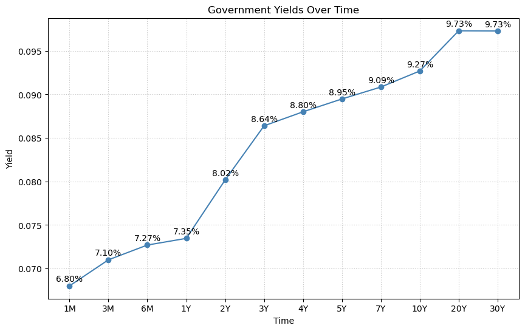
Se observa que, para plazos superiores a cinco años, la curva de tasas se ubica por encima del 9%, lo que implica una prima aproximada de entre 2.20% y 3.00%, dependiendo del plazo considerado. Asimismo, con base en datos del INEGI, la inflación anual promedio de los últimos 20 años se sitúa en 3.60%. En línea con lo anterior, Heath (2025), utilizando información del INEGI y encuestas del Banco de México, estima una inflación general esperada de largo plazo en niveles cercanos a 3.60%.
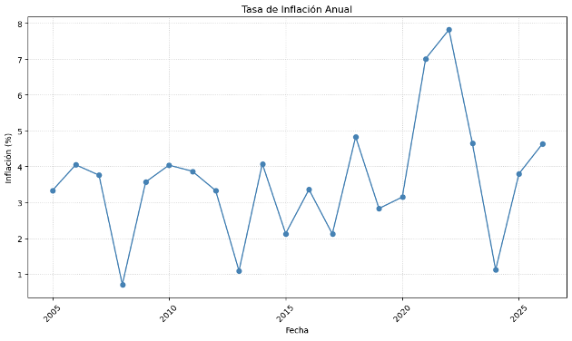
En consecuencia, se adopta una prima de inflación de 3.60% como un supuesto razonable para la determinación de la tasa de interés del crédito hipotecario.
Como se definió previamente, la prima por riesgo de crédito se determina a partir de dos componentes fundamentales: la PD (probabilidad de incumplimiento) y el LGD (pérdida dado incumplimiento), ya que en conjunto permiten estimar la pérdida esperada del crédito.
De acuerdo con datos del Banco de México (2024), el índice de morosidad (utilizado como una aproximación de la PD) se sitúa en 2.7% para créditos hipotecarios. Por su parte, con base en los estudios económicos de la Comisión Nacional Bancaria y de Valores (2015), el LGD promedio en México para créditos de vivienda es cercano a 35%.
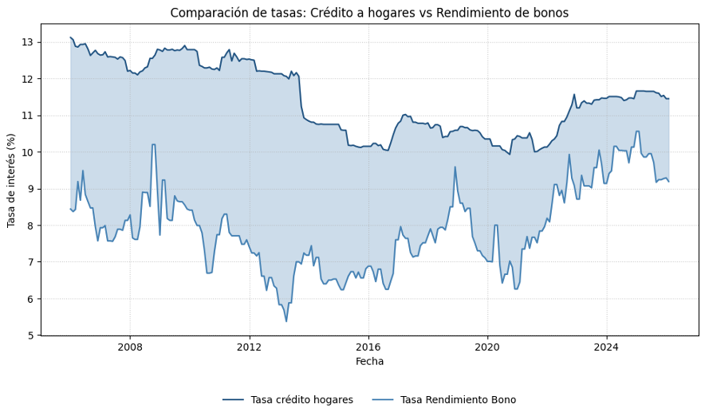
Para la estimación de la prima de liquidez se parte del diferencial histórico entre la tasa de interés de crédito a los hogares y la tasa de rendimiento del Bono M a tasa fija a 20 años, ambas series publicadas por el Banco de México. Para dicha estimación se utiliza el promedio del diferencial entre las dos series de los últimos 10 años. Como se observa en la gráfica, este diferencial ha promediado 2.54% en los últimos 10 años, lo que refleja de manera estructural la compensación adicional que exigen los prestamistas sobre el activo libre de riesgo de plazo equivalente.
Sin embargo, este diferencial bruto no puede interpretarse como prima de liquidez completamente, ya que es un spread compuesto que incorpora a su vez varios elementos: riesgo de crédito, costos operativos, margen de ganancia y, en una fracción, la compensación por iliquidez.
La evidencia académica establece de manera consistente que la prima de liquidez representa una fracción del spread total, no su totalidad. Longstaff, Mithal y Neis (2005) mencionan que el riesgo de crédito explica entre el 50% y el 83% del spread total en instrumentos de deuda, dependiendo de la calidad crediticia del emisor (CFA Institute). Para complementar esta idea, se toma la estimación de Chen, Lesmond y Wei (2007) de que la prima de liquidez promedio para instrumentos de grado de inversión representa aproximadamente 16.83% del spread total observado (CFA Institute).
Aplicando este enfoque al diferencial observado de 2.54%, se estima que la proporción atribuible a la liquidez se encuentra entre el 30% y el 40% del spread bruto, conforme a lo señalado previamente. Este rango supera el estimado de referencia de Chen, Lesmond y Wei (2007), estimado en 16.83% sobre bonos corporativos de grado de inversión en mercados desarrollados, dado que el mercado hipotecario mexicano carece de un mercado secundario profundo y de esquemas de titularización de escala suficiente, lo que limita la capacidad de los tenedores de deuda hipotecaria para liquidar sus posiciones sin incurrir en descuentos sustanciales. En consecuencia, la prima de liquidez implícita en el diferencial observado se estima entre el 30% y 40%, por lo que al utilizar un valor intermedio del 35%, la prima de riesgo resultante es de 0.8890%.
Los costos administrativos representan el conjunto de gastos en que incurre la institución financiera para originar, administrar y dar seguimiento a un crédito hipotecario durante toda su vida. Para su estimación se parte de la estructura de comisiones explícitas registradas ante el Banco de México por las instituciones del sistema, reconstruyendo el costo operativo total anualizado a partir de sus componentes observables.
Los costos administrativos en el crédito hipotecario pueden aproximarse a partir de distintas fuentes del sistema financiero mexicano. En primer lugar, datos de la Comisión Nacional Bancaria y de Valores indican que los costos operativos de la banca en México representan aproximadamente 3.8% de los activos totales (El Economista). Considerando que la cartera de crédito suele representar alrededor del 50%–60% de los activos bancarios (CNBV), esto implica un costo operativo sobre cartera cercano a 1.5%–2.0%.
Por otro lado, el Banco de México establece que el Costo Anual Total (CAT) incorpora no solo la tasa de interés, sino también comisiones y costos administrativos asociados al crédito. En el caso de créditos hipotecarios en México, la diferencia observada entre tasa de interés y CAT suele ubicarse entre 1.5% y 2.5%, de los cuales una parte corresponde a seguros obligatorios (aproximadamente 0.4%–0.8%), lo que implica costos administrativos netos cercanos a 1.0%–1.7%.
En conjunto, la evidencia proveniente de indicadores regulatorios (CNBV), costos de originación y medidas de costo total del crédito (Banxico) converge en un rango consistente para los costos administrativos en crédito hipotecario. Por lo tanto, se adopta un valor puntual del 1.7% para el modelo, el cual resulta consistente con la estructura de costos observada en el sistema financiero mexicano.
El margen de beneficio representa la proporción de los ingresos que quedan después de que una empresa haya deducido sus costes operativos, lo que pone de manifiesto su eficiencia en la gestión de los gastos (Investopedia).
En términos empíricos, este margen (net interest margin) suele situarse en torno al 2%–4% en sistemas bancarios desarrollados, dependiendo del tipo de institución, con valores cercanos a 2%–3% en grandes bancos y superiores a 3% en bancos más pequeños (Banksift). Asimismo, la literatura académica señala que dicho margen incorpora componentes asociados al riesgo, los costos operativos y las condiciones de mercado, por lo que no representa únicamente beneficio puro (MDPI).
En el caso de los créditos hipotecarios, la tasa de interés se determina como un margen sobre una referencia libre de riesgo, reflejando distintos componentes como riesgo de crédito, liquidez y costos operativos. Evidencia empírica sugiere que el diferencial total respecto a tasas soberanas o de referencia suele situarse aproximadamente entre 1% y 3% en condiciones normales de mercado, dependiendo del entorno financiero y del ciclo de tasas.
Dentro de este diferencial, solo una fracción corresponde al margen neto del banco, ya que el resto compensa riesgos y costos asociados a la intermediación financiera (MDPI). En consecuencia, el margen de ganancia efectivo en créditos hipotecarios tiende a ser reducido, de aproximadamente 1.2% en mercados competitivos.
Después de sumar todos los componentes establecidos para la formación de la tasa de interés de un crédito hipotecario, se llega a una tasa final del 11.5040%, la cual se sitúa ligeramente por encima de la tasa hipotecaria promedio del mercado en México (11.45%), confirmando su viabilidad como referencia representativa.
¿Por qué la hipoteca tiene tasa más baja?
El crédito hipotecario tiene un menor riesgo de incumplimiento para el banco, debido a que existe una garantía real, que es la propiedad. En caso de que el cliente no pague, la institución financiera puede recuperar el total o parte del dinero mediante la venta del inmueble. Además, el perfil de los acreditados hipotecarios suele ser más estable, ya que se requiere comprobar ingresos y capacidad de pago, lo que disminuye la probabilidad de incumplimiento. Es por eso que, las tasas de interés de los créditos hipotecarios suelen ser más bajas en comparación con otros tipos de préstamos sin garantía. Sin embargo, factores como el largo plazo del crédito, la inflación esperada y la baja liquidez del instrumento contribuyen a que la tasa no sea tan baja como la de instrumentos libres de riesgo. En México, las tasas hipotecarias han mostrado niveles relativamente moderados, con promedios cercanos al 11% anual en años recientes, dependiendo del perfil del cliente y de las condiciones del mercado.
Esta dinámica se hace evidente al comparar el crédito hipotecario con otros productos del sistema financiero mexicano. El crédito automotriz, aunque también cuenta con colateral físico, presenta una tasa superior (14.50%) dado que el vehículo es un activo depreciable cuyo valor de recuperación disminuye con el tiempo, a diferencia del inmueble que tiende a apreciarse en términos nominales. En el extremo opuesto, los créditos de nómina, tarjeta de crédito y personal registran tasas significativamente mayores, 26.90%, 38.10% y 39.10% respectivamente, al ser productos quirografarios donde el banco no cuenta con garantía real que respalde la recuperación del capital en caso de impago. En estos segmentos, el riesgo crediticio recae enteramente en el comportamiento del acreditado, lo que obliga a las instituciones a compensar esa exposición mediante tasas más elevadas. El crédito de nómina, si bien carece de colateral, modera parcialmente este efecto gracias al descuento automático vía nómina, que reduce la probabilidad de impago y explica su posición intermedia en el espectro de tasas. En conjunto, la tabla refleja una relación inversa clara entre la calidad y liquidez de la garantía ofrecida y el nivel de tasa exigido por el mercado.
| Dimensión | Hipotecario | Automotriz | Nómina | Tarjeta | Personal |
|---|---|---|---|---|---|
| Colateral | Sí (inmueble) | Sí (vehículo) | No | No | No |
| Plazo típico | 15–20 años | 3–5 años | 1–4 años | Revolvente | 1–3 años |
| Liquidez del colateral | Baja | Media | — | — | — |
| Mecanismo de pago | Domiciliación | Domiciliación | Descuento nómina | Pago mín/total | Domiciliación |
| Tasa promedio | 11.45% | 14.50% | 26.90% | 38.10% | 39.10% |
Fuente: Banco de México, Condusef
| Institución | Tasa mínima | Tasa máxima |
|---|---|---|
| BBVA | 9.15% | N/D |
| Banca Mifel | 9.40% | 11.00% |
| Scotiabank | 9.50% | 10.75% |
| HSBC | 9.65% | 10.60% |
| Santander | 10.25% | 13.25% |
| Citibanamex | 9.25% | 11.75% |
| Inbursa | 11.00% | 16.50% |
| Afirme | 10.95% | 13.30% |
| BanRegio | 9.60% | 12.00% |
| Banco del Bajío | 13.20% | 14.20% |
| Tasa Formada | 11.5040% | 11.5040% |
Fuente: SHCP y Condusef
La tasa formada de 11.50% se sitúa dentro del rango competitivo del mercado hipotecario mexicano. Si bien instituciones como BBVA, HSBC y Scotiabank ofrecen tasas mínimas por debajo del 10%, estas corresponden a perfiles de acreditado con condiciones preferenciales (nómina domiciliada, cliente Premier o aforos bajos) que no representan la tasa efectiva promedio del mercado. En contraste, la tasa formada es inferior a la oferta de Banco del Bajío (13.20%–14.20%) y comparable a los rangos medios de Santander, Afirme e Inbursa, lo que confirma su viabilidad como tasa de referencia representativa para un acreditado con perfil estándar en el mercado mexicano.
Planeación del Modelo
Para la realización de este proyecto se optó por el uso de un código basado en programación funcional. Al organizar el código en funciones puras e independientes, cada componente del flujo puede ser probado, modificado y reutilizado de forma aislada sin afectar al resto del sistema. Esto es especialmente relevante en un proyecto de modelación de riesgo crediticio, donde es común iterar sobre distintas especificaciones del modelo, técnicas de validación o métodos de cálculo financiero sin necesidad de alterar el resto del pipeline. Además, la programación funcional favorece la trazabilidad y la reproducibilidad, dos cualidades fundamentales en cualquier modelo a presentar.
El flujo general del código se organiza en torno a una función principal que orquesta tres grandes etapas:
El proceso inicia cargando los datos, cuya salida alimenta directamente al proceso de preparación de variables, que se encarga de separar las características del target y dividir el conjunto en entrenamiento y validación. Este mismo conjunto de entrenamiento se pasa a la regresión logística, que actúa como modelo de referencia y cuyas predicciones permiten establecer una línea base de comparación antes de introducir mayor complejidad. Paralelamente, los datos también pasan por un proceso de ingeniería de características, que transforma y construye variables derivadas que enriquecen la representación de cada solicitante y cuya salida alimentará al modelo principal en la siguiente etapa.
El conjunto de entrenamiento transformado pasa primero por el proceso de bootstrap, que lo amplía sintéticamente. Este conjunto aumentado recibe la validación cruzada, que internamente entrena y evalúa múltiples versiones del modelo en distintas particiones, devolviendo el modelo ajustado junto con las métricas de desempeño por fold. Ese modelo entrenado recibe el conjunto de validación para generar probabilidades de incumplimiento, las cuales se pasan a la curva ROC para determinar el umbral óptimo de clasificación. Con ese umbral definido, las predicciones se evalúan mediante métricas estándar de clasificación y se complementan con un análisis de importancia de variables que explica qué características influyen más en las decisiones.
Las probabilidades de incumplimiento generadas en la etapa anterior se integran al conjunto de validación y se pasan a la función de pérdida esperada, que se apoya en una cadena de cálculos financieros interdependientes que producen la pérdida esperada. Su salida alimenta las funciones de resumen de portafolio que consolidan métricas agregadas como la pérdida total, el valor del portafolio tras aplicar los rechazos y la probabilidad de incumplimiento ponderada. Finalmente, todo el flujo se replica sobre un conjunto de holdout completamente separado para reportar el desempeño del modelo en datos nunca vistos durante el desarrollo.
Diagrama de Lógica / Flujo
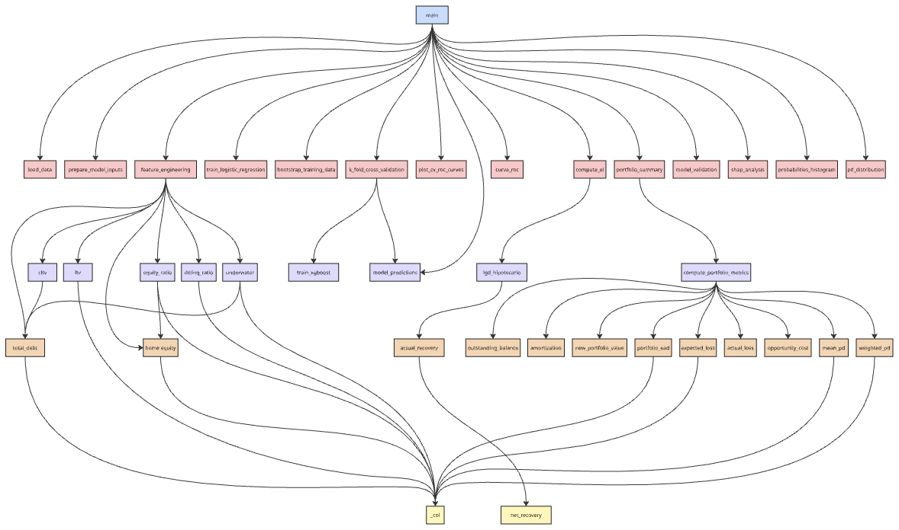
El diagrama representa el flujo de ejecución completo del modelo bajo el paradigma funcional, organizado en cuatro niveles jerárquicos.
Actúa como orquestador único, no contiene lógica propia, sino que delega cada responsabilidad a funciones especializadas.
Ingesta de datos.
Preprocesamiento.
Entrenamiento.
Evaluación. Cada función recibe datos, aplica una transformación específica y devuelve un resultado sin modificar estado externo.
No calcula ratios directamente, sino que compone funciones atómicas: ltv(), cltv(), equity_ratio(), delinq_ratio() y underwater().
Compone net_recovery() y actual_recovery() para producir el LGD por crédito, encadenando tres funciones puras donde la salida de cada una es la entrada de la siguiente.
No realiza ningún cálculo directo, sino que invoca exclusivamente funciones previamente definidas: portfolio_ead(), expected_loss(), actual_loss(), opportunity_cost(), mean_pd() y weighted_pd(), complementadas con amortization() y outstanding_balance() para los valores financieros intermedios necesarios.
Extractor base del sistema: todas las funciones atómicas de nivel 3 derivan de total_debt() y home_equity(), que a su vez extraen columnas mediante este extractor.
Esta arquitectura en capas garantiza que cada función sea testeable de forma independiente y que el flujo de datos sea completamente trazable desde la entrada hasta cada métrica de negocio reportada, cumpliendo los principios de responsabilidad única y transparencia referencial propios del paradigma funcional.
Dataset y Filtrado
Para la construcción del modelo de riesgo crediticio, se utilizó un dataset de Home Equity Loan Default que cuenta con 5,960 observaciones y las siguientes variables:
1 = incumplió el pago o presentó morosidad grave; 0 = pagó el préstamo.
Monto del préstamo solicitado.
Monto adeudado en la hipoteca existente.
Valor de la propiedad actual.
Categorías ocupacionales.
Años en el trabajo actual.
Número de informes desfavorables importantes.
Número de líneas de crédito morosas.
Antigüedad de la línea de crédito más antigua en meses.
Número de consultas de crédito recientes.
Número de líneas de crédito.
Relación deuda-ingreso.
Una de las variables clave es MORTDUE, la cual representa el saldo pendiente de una hipoteca existente y que posteriormente se empleará como Exposure at Default (EAD). Dado que esta variable es fundamental para el cálculo de métricas de riesgo y presenta valores nulos (aproximadamente el 7% del dataset), se optó por eliminar dichas observaciones.
Asimismo, se considera relevante la variable LOAN, que representa un nuevo préstamo solicitado por el cliente, mientras que MORTDUE se interpreta como un crédito previamente adquirido. Este tratamiento implica uno de los supuestos más importantes del modelo: su aplicación se limita a individuos que tienen o han tenido una hipoteca. Como resultado de este filtrado, el dataset se reduce a 5,442 observaciones, manteniendo aún algunos valores faltantes en otras variables.
Imputación de Datos
En el caso de la variable JOB, los valores nulos se reemplazan por la categoría "Other", ya que esta clasificación ya existe dentro del conjunto original. Posteriormente, la variable se transforma mediante one-hot encoding para su correcta utilización en el modelo.
Para las variables DEROG, DELINQ y NINQ; que representan, respectivamente, el número de reportes crediticios negativos, líneas de crédito en mora e investigaciones crediticias recientes, se realiza una imputación utilizando la mediana. Este método se selecciona por su robustez ante valores atípicos, además de que estas variables son discretas, presentan medias cercanas a cero y muestran una alta concentración de observaciones en torno a dicho valor.
Para la imputación de los datos faltantes de las demás variables se consideró KNN Imputation como el método adecuado, ya que mantiene las relaciones complejas que existen entre distintas variables que pueden estar correlacionadas entre sí (Kaur, 2025).
Feature Engineering
Se propone realizar ingeniería de características a partir de las variables disponibles en el dataset. Estas transformaciones se implementan desde el inicio del código, dentro de la sección de metodología, con el objetivo de transformar y enriquecer el dataset antes del entrenamiento del modelo. Este enfoque permite incorporar variables derivadas que capturan de mejor manera el riesgo crediticio, como indicadores de apalancamiento, comportamiento de pago y posición patrimonial del acreditado. Al realizar esta etapa de forma temprana, se asegura que todas las transformaciones sean consistentes a lo largo del análisis y que las variables generadas estén disponibles para las etapas posteriores de modelado, validación y evaluación de resultados.
Suma del saldo hipotecario existente y el nuevo préstamo solicitado. Esta variable permite calcular dos de los indicadores más relevantes en el análisis de crédito hipotecario: el Loan-to-Value (LTV) y el Combined Loan-to-Value (CLTV).
El LTV mide la proporción entre el monto de un préstamo hipotecario y el valor de la propiedad, siendo un indicador clave del riesgo crediticio; niveles elevados de LTV implican mayor riesgo para el prestamista y, en consecuencia, suelen asociarse con tasas de interés más altas (Investopedia, 2025). Por su parte, el CLTV amplía este análisis al considerar la totalidad de las deudas garantizadas sobre la propiedad, incluyendo la hipoteca principal y cualquier otro financiamiento adicional, en relación con su valor. Este indicador proporciona una medida más completa del apalancamiento del acreditado y es ampliamente utilizado por las instituciones financieras para evaluar el riesgo de incumplimiento cuando existen múltiples créditos asociados al mismo inmueble (Investopedia, 2025).
Se incorporaron variables relacionadas con el patrimonio del propietario con el objetivo de capturar de manera más precisa la posición financiera del acreditado. Permiten evaluar qué tan apalancado se encuentra el individuo y qué nivel de respaldo tiene el crédito en términos de patrimonio. La relevancia de estas métricas radica en que un mayor nivel de home equity implica una menor probabilidad de incumplimiento, ya que el acreditado tiene más incentivos económicos para mantener el pago del crédito y evitar la pérdida de su patrimonio. Asimismo, un mayor equity ratio reduce el riesgo para la institución financiera al incrementar el valor recuperable en caso de ejecución. En este sentido, el home equity representa la porción del inmueble que realmente pertenece al propietario y se incrementa conforme se amortiza la deuda o aumenta el valor de la vivienda, siendo un indicador clave en la evaluación del riesgo hipotecario (Investopedia, 2025).
Se incorporo esta variable adicional orientada a capturar con mayor precisión el perfil de riesgo crediticio del acreditado. Esta variable es la proporción de líneas de crédito en mora respecto al total de líneas de crédito. Este indicador permite medir la calidad del comportamiento crediticio del individuo de forma relativa, ya que no solo considera el número absoluto de incumplimientos, sino su peso dentro del total de obligaciones financieras. Un mayor valor de este ratio sugiere un deterioro en la disciplina de pago y, por tanto, un mayor riesgo de incumplimiento, lo cual es consistente con la literatura de riesgo crediticio, donde el historial de pagos es uno de los principales determinantes del default (Investopedia, 2025).
Variable binaria que identifica aquellos casos en los que la deuda total asociada al inmueble excede su valor. Esta condición, conocida como negative equity o estar “underwater”, implica que el acreditado debe más de lo que vale su propiedad, lo cual incrementa significativamente los incentivos a incumplir, especialmente en contextos de estrés financiero. De acuerdo con Investopedia (2025), los prestatarios en esta situación presentan una mayor probabilidad de default, dado que la venta del inmueble no sería suficiente para cubrir la deuda pendiente, afectando directamente la recuperación esperada del crédito.
Variables y Partición de Datos
Para la construcción del modelo, se opta por utilizar la totalidad de las variables originales del dataset, así como las generadas en la sección de feature engineering, debido a su relevancia económica dentro del análisis de crédito hipotecario. Las variables originales capturan características fundamentales tanto del colateral como del comportamiento crediticio del acreditado, lo que las hace altamente informativas para la predicción de incumplimiento.
No obstante, se excluyen las variables TOTAL_DEBT y HOME_EQUITY, principalmente por tratarse de valores absolutos que sirven como base para la construcción de otros indicadores en forma de razones. Esta decisión permite evitar problemas de colinealidad y priorizar métricas relativas que facilitan la comparabilidad e interpretación entre individuos.
Una vez preparados los datos, se realiza una partición en tres subconjuntos:
El conjunto de prueba se mantiene completamente fuera del proceso de modelado y ajuste, utilizándose únicamente en la etapa final para evaluar el desempeño del modelo. Este enfoque permite obtener una estimación más objetiva de su capacidad predictiva y reducir el riesgo de sobreajuste (overfitting).
Modelo Base — Regresión Logística
Como punto de partida, se implementa una regresión logística que funciona como modelo base (benchmark). En esta primera aproximación, se utilizan únicamente las variables originales del dataset, excluyendo las variables generadas, con el objetivo de establecer métricas iniciales de desempeño y contar con un punto de comparación claro para evaluar las mejoras derivadas de modelos más complejos.
Al realizar la regresión logística se obtienen los siguientes resultados:
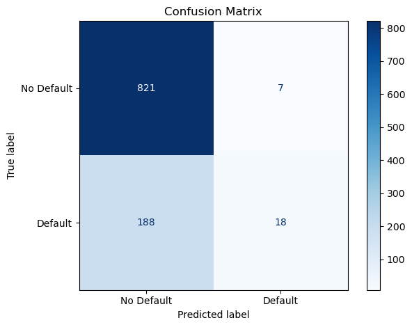
Se obtiene un accuracy de 81%, lo cual en primera instancia podría considerarse satisfactorio. No obstante, al analizar la matriz de confusión, se identifica una limitación relevante: clasifica incorrectamente a 188 personas que incurrirían en default como si no lo hicieran. Este tipo de error resulta particularmente crítico en el contexto de riesgo crediticio, ya que implica la originación de créditos que no serán pagados, generando pérdidas reales para la institución. En contraste, los 7 casos mal clasificados como default representan únicamente un costo de oportunidad.
Desde la perspectiva de las instituciones financieras, los errores no son simétricos. Los bancos priorizan minimizar los falsos negativos (clasificar como "No Default" a quien sí incumplirá), ya que estos se traducen directamente en pérdidas económicas. Los falsos positivos (rechazar clientes que sí pagarían) afectan principalmente los ingresos potenciales, pero no comprometen el capital de la misma forma. Por ello, en modelos de riesgo crediticio se suele privilegiar métricas y umbrales de decisión que reduzcan los falsos negativos, incluso a costa de sacrificar algo de accuracy global (Investopedia, 2025).
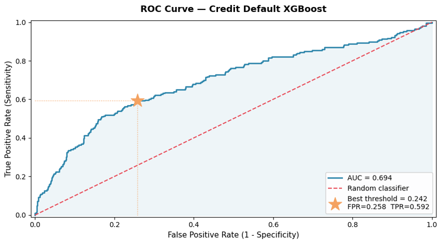
La curva ROC de la regresión logística muestra un AUC de aproximadamente 0.69, lo que indica una capacidad de discriminación moderada. Si bien el desempeño es superior al de un clasificador aleatorio (AUC = 0.5), aún se encuentra lejos de niveles considerados altos (>0.80), lo que sugiere que el modelo tiene limitaciones para capturar completamente la dinámica del riesgo crediticio. En este sentido, aunque puede ser útil como referencia inicial (benchmark), existe un margen considerable de mejora mediante el uso de modelos más complejos o la incorporación de variables adicionales.
Modelo Final — XGBoost
Para la construcción del modelo final, se opta por utilizar el algoritmo XGBoost debido a su capacidad para capturar relaciones no lineales y mejorar el desempeño predictivo en problemas de clasificación. En este modelo se incorporan tanto las variables originales del dataset como aquellas generadas en la etapa de feature engineering, con el objetivo de aprovechar al máximo la información disponible y enriquecer la capacidad explicativa del modelo en la predicción del riesgo de incumplimiento..
El uso de XGBoost se fundamenta en el marco de boosting descrito por Trevor Hastie, Robert Tibshirani y Jerome Friedman (2009), el cual construye modelos aditivos mediante optimización secuencial, permitiendo capturar relaciones no lineales e interacciones complejas entre variables. Este enfoque resulta particularmente adecuado para modelos de score y riesgo crediticio, donde los patrones financieros no suelen ser estrictamente lineales.
la elección de XGBoost se sustenta en evidencia empírica, ya que ha demostrado un desempeño superior frente a otros modelos tradicionales en problemas de riesgo crediticio. En particular, el estudio de Cao, He, Chen y Zhang (2018) encuentra que los modelos basados en gradient boosting presentan mayor capacidad predictiva en la estimación del default, lo que justifica su uso para el modelado en este contexto.
Bootstrap y Validación Cruzada
El bootstrap es una técnica estadística de remuestreo con reemplazo cuyo principio fundamental consiste en generar nuevas muestras a partir del conjunto de datos original, permitiendo que una misma observación aparezca múltiples veces en la muestra resultante. Esto lo convierte en una herramienta especialmente útil cuando el tamaño del conjunto de entrenamiento es limitado, ya que permite ampliar artificialmente la cantidad de datos disponibles para ajustar el modelo sin necesidad de recolectar nueva información (James et al., 2021).
Para la realización del proyecto, se aplica bootstrap directamente sobre el conjunto de entrenamiento antes de ajustar el modelo. Mediante remuestreo con reemplazo, se generan índices aleatorios que producen un conjunto sintético del doble del tamaño original, por lo que el modelo recibe aproximadamente el doble de observaciones para aprender los patrones de incumplimiento, incluyendo repeticiones ponderadas de casos que el generador aleatorio seleccionó más de una vez.
En este caso el bootstrap no se emplea en su uso estadístico clásico de estimación de incertidumbre o intervalos de confianza (Efron, 1979), sino con el propósito de aumentar sintéticamente el volumen de datos de entrenamiento, lo cual resulta especialmente relevante dado que el dataset es naturalmente pequeño y desbalanceado.
Además del remuestreo con bootsrap, se lleva a cabo en el entrenamiento una validación cruzada con K-Folds. Esta técnica consiste en dividir el conjunto de entrenamiento en k subconjuntos (folds) de tamaño aproximadamente igual. En cada iteración, el modelo se entrena con k-1 folds y se evalúa en el fold restante; este proceso se repite k veces de modo que cada fold actúa una vez como conjunto de validación. La métrica final se obtiene promediando los resultados de las k iteraciones, lo que produce una estimación más robusta y menos sensible a la partición particular de los datos que una sola división entrenamiento-validación (Hastie et al., 2009).
En el caso del proyecto se utilizaron 5 folds, ya que no es un conjunto de entrenamiento muy grande, incluso tras haber aplicado bootstrap. Los folds utilizados son estratificados, lo que significa que se añade una restricción adicional: cada fold mantiene la misma proporción de clases del dataset original. Esto es crítico en problemas de crédito como este, donde los defaults representan una fracción pequeña del total. Sin estratificación, algunos folds podrían contener muy pocos o ningún caso de default, haciendo que el AUC estimado sea poco confiable (Kohavi, 1995).
En cada uno de los 5 folds estratificados, se entrena un modelo XGBoost independiente sobre el subconjunto independiente y se calcula el AUC-ROC sobre el fold de validación correspondiente. Al finalizar las 5 iteraciones, se reporta el AUC-ROC promedio de los 5 folds y su desviación estándar, lo que permitirá detectar si el modelo varía significativamente entre los distintos subconjuntos.
La validación cruzada estratificada de 5 folds arrojó un AUC promedio de 0.9914 con una desviación estándar de ±0.0033, lo que refleja un rendimiento alto y consistente a lo largo de todas las particiones. Los AUC individuales por fold fueron 0.9926, 0.9916, 0.9856, 0.9910 y 0.9960, mostrando una variación mínima entre ellos. La estrecha desviación estándar indica que el modelo no depende de una partición particular de los datos para alcanzar buen desempeño, lo cual es evidencia de estabilidad y ausencia de sobreajuste en el proceso de entrenamiento.
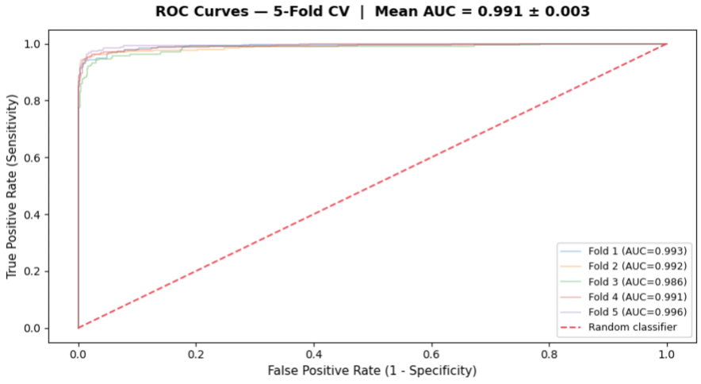
Como se observa en la figura, las curvas ROC de los cinco folds son prácticamente indistinguibles entre sí, agrupándose de forma muy cercana en la esquina superior izquierda de la gráfica, lejos de la línea diagonal punteada que representa un clasificador aleatorio. Este comportamiento confirma que el modelo mantiene una alta capacidad discriminatoria entre clientes que incumplen y los que no, independientemente de cómo se particionen los datos. El fold con menor desempeño (Fold 3, AUC = 0.986) sigue siendo considerablemente superior a un clasificador aleatorio, lo que refuerza la robustez general del modelo.
Aunque el modelo se entrena con datos no propios de México, las relaciones subyacentes que captura son relativamente estables entre distintos óptimos locales de la función de pérdida, tal como lo señala la literatura de aprendizaje automático (p. ej., Choromanska et al., 2015). Esto implica que el modelo no depende excesivamente de una solución única, sino que refleja patrones estructurales más amplios presentes en los datos.
En consecuencia, si bien es necesario considerar las diferencias en las condiciones económicas y en el comportamiento crediticio entre ambos países, los resultados obtenidos para este dataset pueden servir como un punto de referencia razonable para compararlos con México, especialmente en términos relativos o direccionales, más que como estimaciones absolutas.
Estimación de PD, LGD y EAD
Una vez entrenado y obtenido el mejor modelo, se realizan las predicciones para la sección de validation. Se predice la probabilidad de default de cada una de las personas, y con la curva ROC se calibra cual sería el mejor threshold para la clasificación de Default y No Default de cada persona.
Una vez que se tiene la probabilidad de default de cada una de las personas, es necesario también generar y analizar las métricas de negocio más clásicas para créditos hipotecarios como PD, LGD, EAD y EL. Como se menciona en la sección de Datos, la variable MORTDUE se asume como EAD, con las predicciones del modelo se obtuvo PD, por lo que es necesario encontrar una forma de calcular el LGD a partir de los datos con los que cuenta.
Una vez entrenado y seleccionado el mejor modelo, se generan las predicciones sobre el conjunto de validación. En esta etapa, se estima la probabilidad de default para cada individuo y, a partir de la curva ROC, se determina el threshold óptimo que permite clasificar a los clientes en Default y No Default, balanceando adecuadamente los distintos tipos de error.
Posteriormente, con las probabilidades estimadas, se procede al cálculo y análisis de las principales métricas de negocio en crédito hipotecario, tales como PD, LGD, EAD y pérdida esperada (EL). Como se mencionó en la sección de datos, la variable MORTDUE se utiliza como aproximación del EAD, mientras que la PD se obtiene directamente de las predicciones del modelo. En consecuencia, resulta necesario definir una metodología para estimar el LGD a partir de la información disponible en el dataset, con el fin de completar el cálculo integral del riesgo crediticio.
Para estimar el Loss Given Default (LGD), se adopta un enfoque estructural basado en el valor del colateral hipotecario. En ausencia de información histórica de recuperaciones, el LGD se aproxima a partir de la relación entre el saldo insoluto del crédito (EAD) y el valor del inmueble que respalda la operación. Este enfoque es consistente con la práctica en crédito hipotecario, donde la severidad de la pérdida depende principalmente del valor recuperable del activo subyacente.
En primer lugar, se estima el valor neto recuperable del inmueble aplicando un ajuste (haircut) sobre su valor de mercado. Este haircut captura los costos asociados al proceso de ejecución hipotecaria, incluyendo gastos legales, mantenimiento del inmueble durante el proceso judicial y descuentos por venta forzada en el mercado secundario. Formalmente, el valor neto recuperable se define como:
Posteriormente, se calcula la recuperación efectiva del banco considerando que ésta no puede exceder el saldo adeudado por el acreditado. Es decir, aun cuando el valor del colateral sea superior al EAD, la institución financiera únicamente puede recuperar hasta el monto del crédito. Por lo tanto, la recuperación efectiva se modela como el mínimo entre el EAD y el valor neto recuperable del inmueble:
Finalmente, el LGD se define como la proporción de la exposición que no logra ser recuperada en caso de incumplimiento. De esta manera, se calcula como:
Este planteamiento permite capturar de manera explícita la dependencia del LGD respecto al nivel de apalancamiento del crédito (LTV). En escenarios donde el valor del inmueble, ajustado por costos de ejecución, es suficiente para cubrir la deuda, el LGD tiende a cero. En contraste, cuando el crédito presenta un alto nivel de apalancamiento, la recuperación resulta insuficiente y el LGD aumenta significativamente.
El haircut aplicado al valor del colateral se calibró en 30%, valor que representa un punto de referencia central dentro del rango empíricamente justificable para la cartera hipotecaria residencial mexicana (20%–40%). Este parámetro captura tres fuentes principales de pérdida de valor durante el proceso de ejecución: honorarios legales y gastos judiciales (3%–8%), costos de mantenimiento del inmueble durante el proceso (2%–5%) y el descuento por venta forzada en subasta pública (fire-sale discount) (15%–25%). La principal justificación regulatoria proviene del Artículo 99 Bis 2 de la Circular Única de Bancos, que establece que la Severidad de la Pérdida de la cartera hipotecaria de vivienda debe incorporar explícitamente los costos asociados a los procesos de realización, incluyendo costos judiciales, administrativos de cobranza y de escrituración (Comisión Nacional Bancaria y de Valores [CNBV], 2017).
Honorarios legales y gastos judiciales: 3%–8%.
Costos de mantenimiento del inmueble durante el proceso judicial: 2%–5%.
Descuento por venta forzada en subasta pública: 15%–25%.
Adicionalmente, el Anexo 16 de la misma circular reconoce que la eficiencia judicial varía significativamente entre entidades federativas, clasificándolas en regiones A, B y C, lo que implica que el haircut efectivo oscila entre 20% en estados con procesos ágiles (como Ciudad de México y Nuevo León) y hasta 35%–40% en estados con mayor rezago judicial, donde el juicio hipotecario puede extenderse entre dos y cuatro años (CNBV, 2017; Comisión Nacional de Procedimientos Civiles y Familiares [CNPCF], 2024). La selección de 30% frente al piso de 25% se justifica por dos consideraciones adicionales: primero, el componente de fire-sale discount es estructuralmente más elevado en el mercado mexicano, donde Coldwell Banker México (2024) documenta que los precios de remate se sitúan típicamente entre 20% y 60% por debajo del valor de tasación; segundo, la duración promedio del proceso de ejecución hipotecaria en México —aproximadamente 18 meses en condiciones ordinarias, y materialmente mayor cuando el deudor interpone un amparo— incrementa tanto los costos de mantenimiento acumulados como el descuento temporal implícito en la recuperación (Urban Capital, 2024; Rosen Law, 2024).
El supuesto de 30% es, por tanto, consistente con el piso regulatorio de 35% de LGD para hipotecas residenciales establecido por el enfoque IRB Fundación de Basilea II, que valida que el nivel de pérdida resultante no subestima el riesgo sistémico de la cartera (Basel Committee on Banking Supervision [BCBS], 2006).
Posteriormente se calculan tanto el Expected Loss Porcentual como el Expected Loss, los cuales se definen como:
Estas métricas, en conjunto, permiten realizar un análisis integral de la cartera y evaluar el nivel de riesgo al que se encuentra expuesta la institución. No obstante, este análisis se centra en la cartera existente (MORTDUE), por lo que resulta igualmente relevante evaluar el comportamiento de una cartera potencial.
Análisis de Cartera Potencial
Además del análisis de la cartera existente (MORTDUE), resulta relevante evaluar el comportamiento de una cartera potencial. Para ello, se utiliza la variable LOAN, que representa nuevos préstamos solicitados, con el fin de simular los resultados que se obtendrían al aplicar el modelo y analizar métricas de negocio como la pérdida real y el costo de oportunidad.
Para llevar a cabo esta simulación, se sigue un proceso estructurado. En primer lugar, la variable LOAN se amortiza utilizando la tasa estimada en la investigación (11.5040%) a un plazo de 20 años, el cual corresponde al plazo más común en el mercado hipotecario mexicano, de acuerdo con instituciones como HSBC, BBVA, Banorte y Banamex (Bancario, 2026). Esto permite estimar los flujos de interés y, por ende, cuantificar el costo de oportunidad asociado a créditos no otorgados.
Adicionalmente, es necesario clasificar a los clientes en Default y No Default, más allá de contar únicamente con la probabilidad de incumplimiento. Para ello, se utiliza el umbral óptimo obtenido a partir de la curva ROC. Si bien este umbral puede ajustarse para optimizar métricas de negocio específicas, diversas pruebas realizadas indican que el valor derivado de la curva ROC suele ofrecer un desempeño consistente en términos de clasificación.
Una vez realizada la clasificación, la nueva cartera potencial se construye considerando únicamente a los individuos clasificados como No Default, es decir, aquellos cuyos créditos serían aprobados por el modelo. En consecuencia, el valor de la cartera corresponde a la suma de los montos de LOAN aprobados. A partir de esta cartera, es posible estimar la pérdida real, la cual se calcula como:
crédito aprobado
default real
saldo insoluto en el mes 60 (año 5)
LGD promedio
Para la estimación de la pérdida en caso de incumplimiento (LGD), se utilizó un valor del 35%, correspondiente al promedio reportado para México, en lugar del LGD estimado a partir del portafolio existente. Esta decisión responde a la dificultad de transferir un LGD específico a la nueva cartera, dado que las condiciones de mercado bajo las cuales se construyó la cartera original difieren de las actuales. Por otro lado, para estimar la exposición en caso de incumplimiento (EAD) de la nueva cartera simulada, se empleó el saldo insoluto de los créditos a los 5 años (60 meses), periodo que tiende a concentrar el mayor riesgo de default de un crédito (Dirick et al., 2016). Lo anterior se explica por el escaso capital (equity) que el deudor acumula sobre el inmueble en ese lapso, así como por la volatilidad inherente al mercado inmobiliario.
Posteriormente se calcula el costo de oportunidad, el cual representa los intereses que el banco hubiera ganado por los préstamos que el modelo rechaza pero en realidad sí hubieran sido pagados. Estos se calculan de la siguiente manera:
monto original del crédito solicitado por el acreditado i
tasa de interés mensual, derivada como r = tasa anual / 12
número total de pagos mensuales (plazo del crédito, 240 meses = 20 años)
Además tanto la pérdida real como el costo de oportunidad son calculados como porcentajes de la nueva cartera como medida más interpretable y comparable.
Segmentación y Explicabilidad
Para complementar el análisis de la cartera existente, se segmenta a los clientes en cuatro buckets de riesgo mediante cuantiles basados en la probabilidad de default. Esta clasificación permite descomponer la cartera en distintos niveles de riesgo y analizar de manera más detallada el comportamiento de variables clave, como la pérdida esperada y la probabilidad de incumplimiento, dentro de cada segmento.
Adicionalmente, con el fin de evaluar la capacidad de clasificación del modelo y la concentración de las probabilidades estimadas, se emplean herramientas gráficas. En particular, se analiza la distribución de la probabilidad de default de la cartera, así como un histograma que compara las probabilidades predichas frente a los resultados reales. Este enfoque facilita la identificación de patrones, sesgos y posibles áreas de mejora en el modelo.
Cabe destacar que este proceso de evaluación de métricas de negocio y desempeño del modelo se realiza tanto sobre el conjunto de validación como sobre el conjunto de prueba, lo que permite obtener una visión más robusta y generalizable de los resultados.
Con el propósito de dar explicabilidad del modelo y comprender el impacto de las variables utilizadas; tanto las originales como las generadas mediante ingeniería de características (feature engineering), se emplearon los valores SHAP. Esta metodología permite interpretar la lógica detrás de las decisiones de clasificación del modelo, identificando la contribución de cada variable en la predicción final y mejorando así la transparencia del proceso de evaluación del riesgo crediticio.
Interpretación del Modelo
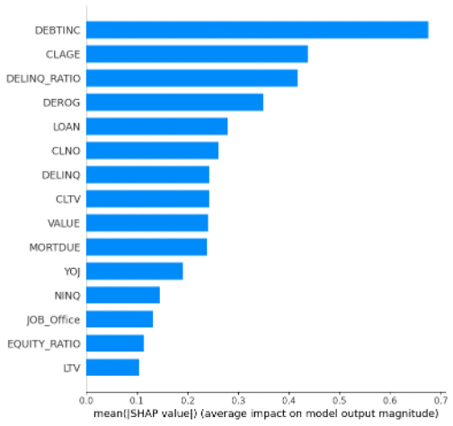
Los valores SHAP revelan que el modelo aprende señales económicamente coherentes con la teoría de riesgo crediticio hipotecario. DEBTINC (la razón deuda-ingreso) es con diferencia la variable más influyente, con un impacto promedio en magnitud casi 60% superior al de la segunda variable. El beeswarm confirma la dirección esperada: valores altos de DEBTINC (puntos rojos desplazados hacia la derecha) incrementan sustancialmente la probabilidad de default, capturando acreditados cuya carga financiera total compromete su capacidad de servicio de la deuda hipotecaria. CLAGE (la antigüedad de la línea de crédito más antigua en meses) ocupa el segundo lugar, con valores bajos asociados a mayor riesgo, lo que refleja que acreditados con historial crediticio corto son intrínsecamente más volátiles.
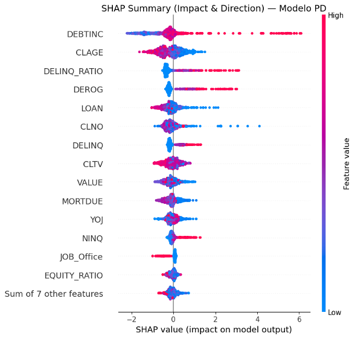
El tercer lugar de DELINQ_RATIO, variable derivada en el proceso de feature engineering como el cociente entre líneas delinquentes y líneas totales, es una validación directa de que la ingeniería de features aportó señal incremental al modelo. De manera similar, CLTV aparece entre las quince variables más importantes, capturando el apalancamiento combinado de la deuda nueva sobre el colateral, una métrica que no existía en el dataset original y que el modelo incorpora con dirección positiva: mayor CLTV implica mayor probabilidad de default. DEROG, DELINQ, y NINQ completan el perfil de comportamiento crediticio, mientras que LTV y EQUITY_RATIO (también derivadas) aparecen en los últimos lugares del ranking, sugiriendo que su señal queda parcialmente capturada por CLTV y MORTDUE respectivamente. En conjunto, el modelo combina variables de capacidad de pago (DEBTINC, LOAN), historial crediticio (CLAGE, DEROG, DELINQ_RATIO) y calidad del colateral (CLTV, VALUE, MORTDUE) (los tres pilares del análisis hipotecario tradicional) lo que refuerza la interpretabilidad y justificación económica del modelo.
Validation
Una vez probado el modelo en los datos de validación se obtienen las siguientes métricas relevantes referentes al desempeño de este.
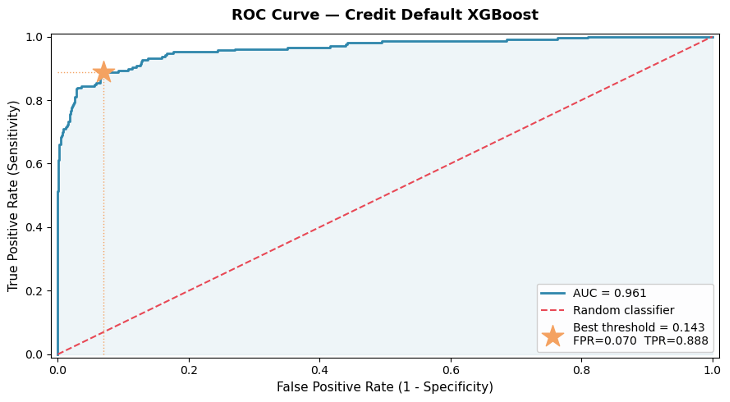
Durante el entrenamiento, la validación cruzada de K-Folds reporta un AUC promedio de 0.990, cifra que aislada podría interpretarse como sobreajuste. Sin embargo, al evaluar el modelo sobre el conjunto de validación (datos que no participaron en ninguna etapa del entrenamiento) el AUC se mantiene en 0.961, una caída de apenas 2.9 puntos porcentuales. Esta brecha reducida indica que el modelo generaliza correctamente: la diferencia es consistente con varianza de muestreo esperada en datasets de tamaño moderado, y no con un modelo que haya memorizado los patrones del conjunto de entrenamiento. En el contexto de modelos de riesgo crediticio, donde la estabilidad del poder discriminante fuera de muestra es un requisito regulatorio explícito bajo los marcos de validación de Basilea, esta consistencia entre AUC in-sample y out-of-sample es un indicador favorable de la robustez del modelo.
El threshold óptimo de 0.143, seleccionado mediante la minimización de la distancia euclidiana al punto ideal (FPR=0, TPR=1), produce un TPR de 88.8% con un FPR de apenas 7.0%. En términos de negocio esto significa que el modelo identifica correctamente casi 9 de cada 10 acreditados que defaultearán, sacrificando únicamente el 7% de los clientes solventes, es decir, el costo de oportunidad por rechazo indebido es relativamente contenido. La asimetría entre estos dos errores es deliberada: en crédito hipotecario, el costo de un falso negativo (otorgar crédito a quien defaulteará) excede sistemáticamente el costo de un falso positivo (rechazar a un buen cliente), dado que la pérdida esperada por default incluye costos de ejecución hipotecaria, tiempo de recuperación judicial y deterioro del colateral.
Es importante notar que estas métricas corresponden al conjunto de validación, utilizado durante el desarrollo del modelo para la selección del threshold. La evaluación definitiva de generalización se reserva para el conjunto de prueba, que no ha influido en ninguna decisión de modelado. No obstante, la forma de la curva, con una subida pronunciada hacia TPR alto a niveles muy bajos de FPR, sugiere que el modelo no está simplemente memorizando patrones del entrenamiento, sino capturando señales estructurales del riesgo hipotecario como el LTV, el CLTV y el historial de delinquencia.
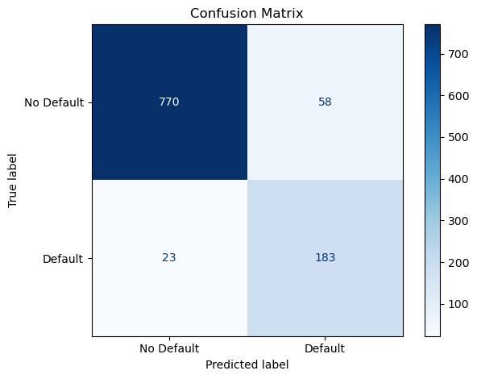
La matriz de confusión traduce los resultados de la curva ROC en decisiones de crédito concretas. El modelo alcanza un accuracy global del 92% sobre el conjunto de validación, clasificando correctamente 953 de los 1,034 casos evaluados. No obstante, en modelos de riesgo crediticio el accuracy agregado es una métrica secundaria, lo que determina la calidad del modelo es la distribución de errores entre clases. De los 206 acreditados que efectivamente defaultearon, el modelo identifica correctamente 183, logrando un recall de 88.8% sobre la clase positiva, consistente con el TPR reportado en la curva ROC.
Los errores restantes revelan el trade-off inherente al threshold seleccionado. Los 23 falsos negativos (acreditados aprobados que defaultearon) constituyen la fuente de pérdida crediticia no anticipada; dado su tamaño relativo frente al total de defaults reales, esta exposición es estructuralmente contenida. Los 58 falsos positivos representan el costo de oportunidad: clientes solventes rechazados incorrectamente. Esta asimetría es deliberada, el threshold de 0.143 prioriza la detección de defaults sobre la minimización de rechazos indebidos, decisión justificada en un producto hipotecario de largo plazo donde el costo de recuperación ante un default excede sistemáticamente el ingreso foregone por un rechazo incorrecto.
El modelo se aplica sobre la cartera hipotecaria existente, cuya exposición total (EAD) asciende a $76.6 millones, medida como la suma de saldos vigentes (MORTDUE) de todos los acreditados en el conjunto de prueba. Sobre esta cartera, el modelo estima una Pérdida Esperada de $964,766 (1.26% del EAD), calculada como la suma de PD × LGD × EAD a nivel individual para cada crédito. Este nivel de EL es consistente con rangos observados en carteras hipotecarias de calidad moderada, donde la garantía real del inmueble actúa como amortiguador estructural de la pérdida.
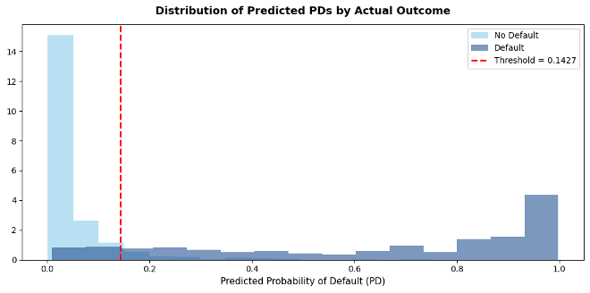
La distribución de PDs predichas revela la composición de riesgo de la cartera. La PD promedio simple es de 16.68%, mientras que la PD promedio ponderada por EAD se reduce a 14.73%, la diferencia indica que los créditos de mayor saldo vigente tienden a concentrarse en segmentos de menor riesgo, lo cual es una señal favorable desde la perspectiva de exposición neta del portafolio. La distribución presenta una marcada asimetría positiva: la gran mayoría de los acreditados se concentra en probabilidades bajas de default, con una cola derecha que captura un subconjunto de créditos en situación de alto estrés financiero.
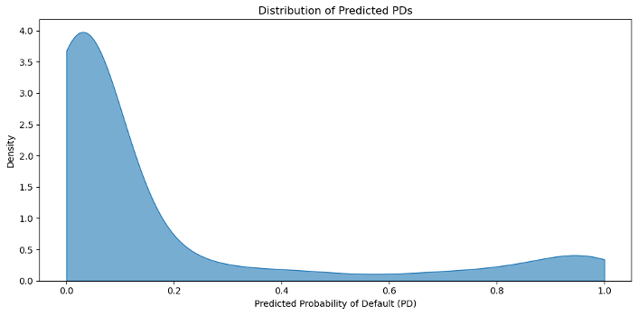
La segmentación por bucket revela una concentración de riesgo marcadamente asimétrica. Los tres primeros segmentos (Low, Medium y High) agrupan el 75% de los acreditados y explican apenas $173,847 de pérdida esperada combinada, equivalente al 18% del EL total del portafolio. En contraste, el bucket Very High, con una PD promedio de 57.35%, concentra $790,920 de EL y representa por sí solo el 82% de la pérdida esperada total, a pesar de tener el menor EAD absoluto de los cuatro segmentos. Esto indica que el riesgo del portafolio no está distribuido uniformemente, está altamente localizado en un subconjunto específico de acreditados.
| Bucket | N Créditos | EAD | Avg PD | Expected Loss | EL (%) |
|---|---|---|---|---|---|
| LOW | 259 | $20,612,223.00 | 0.84% | $13,220.67 | 0.06% |
| MEDIUM | 258 | $20,346,721.00 | 2.16% | $43,356.60 | 0.21% |
| HIGH | 258 | $19,418,488.00 | 6.26% | $117,269.02 | 0.60% |
| VERY HIGH | 259 | $16,215,712.82 | 57.35% | $790,920.21 | 4.88% |
| TOTAL | 1,034 | $76,593,144.82 | — | $964,766.50 | 1.26% |
Desde la perspectiva de gestión de cartera, esta estructura tiene una implicación directa: una política de crédito que identifique y restrinja el acceso al segmento Very High tendría un impacto desproporcionado en la reducción de pérdidas esperadas con un sacrificio relativamente menor de EAD. Los buckets Low y Medium presentan un EL/EAD inferior al 0.25%, consistente con carteras hipotecarias de buena calidad crediticia donde la garantía real actúa como mitigante efectivo del riesgo.
La aplicación del modelo sobre las solicitudes nuevas (columna LOAN) genera un portafolio aprobado de $15.3 millones, sobre el cual la pérdida real por defaults no detectados asciende a $119,311; equivalente al 0.78% del nuevo portafolio. Este resultado es directamente comparable con la pérdida esperada de la cartera existente (1.26% del EAD), y la supera favorablemente: el modelo logra aprobar créditos con una tasa de pérdida realizada 48 puntos base inferior a la del portafolio actual, lo que valida su utilidad como herramienta de originación.
El costo de esta selectividad es un costo de oportunidad de $1.29 millones (8.47%), correspondiente al ingreso por intereses foregone en solicitudes rechazadas que habrían cumplido. Este trade-off es inherente al threshold conservador de 0.143, el modelo prioriza evitar defaults sobre maximizar originación. En la práctica, este balance es una decisión de negocio: un banco con mayor apetito de riesgo podría elevar el threshold para capturar parte de ese ingreso foregone, asumiendo un incremento controlado en la tasa de pérdida realizada. Sin embargo, como se menciono previamente al incrementar el threshold el trade-off de los resultados obtenidos entre pérdidas reales y costo de oportunidad no resulta ser favorable.
Test
El conjunto de prueba, separado al inicio del proceso antes de cualquier decisión de modelado, constituye la evaluación definitiva del modelo sobre datos que no participaron en ninguna etapa de su desarrollo, ni en el entrenamiento, ni en la selección de hiperparámetros, ni en la determinación del threshold de clasificación. A diferencia del conjunto de validación, cuyos resultados influyeron indirectamente en decisiones de ajuste, el conjunto de prueba se reserva como referencia neutral para estimar el desempeño real del modelo ante solicitudes hipotecarias nuevas.
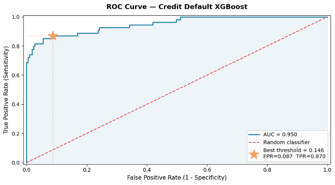
El modelo mantiene un AUC de 0.950 sobre el conjunto de prueba, apenas 1.1 puntos porcentuales por debajo del 0.961 registrado en validación. Esta consistencia entre ambos conjuntos es el indicador más sólido de generalización: confirma que el poder discriminante del modelo no dependía de particularidades del conjunto de validación, sino que refleja patrones estructurales del riesgo hipotecario capturados durante el entrenamiento. Una degradación de esta magnitud es esperada y aceptable en modelos de crédito, donde una caída superior a 5 puntos entre validación y prueba típicamente señalaría sobreajuste o inestabilidad del modelo.
El threshold óptimo calculado sobre el conjunto de prueba es 0.146, prácticamente idéntico al 0.143 seleccionado en validación, una diferencia de apenas 0.3 puntos porcentuales que confirma la estabilidad del punto de corte ante un cambio completo de datos. Esta consistencia no es trivial: indica que la frontera de decisión aprendida por el modelo es robusta y no dependía de la composición particular del conjunto de validación. Para la clasificación final sobre el conjunto de prueba se utiliza deliberadamente el threshold calibrado en validación (0.143) y no el propio del test, evitando así cualquier forma de data leakage; usar el threshold óptimo de prueba para clasificar sobre esos mismos datos introduciría una ventaja informacional que inflaría artificialmente las métricas reportadas.
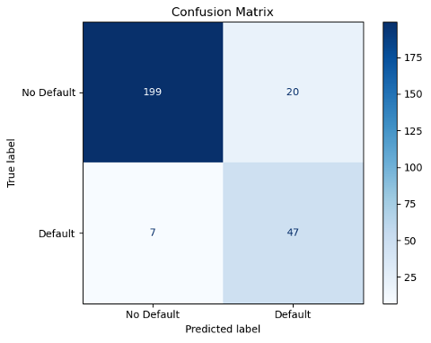
Sobre el conjunto de prueba, el modelo alcanza un accuracy global del 89.7%, clasificando correctamente 246 de los 273 casos evaluados. La distribución de errores replica el patrón observado en validación: de los 54 acreditados que efectivamente defaultearon, el modelo identifica correctamente 47, manteniendo un recall de 87.0% sobre la clase positiva, lo cual es consistente con el 88.8% registrado en validación y confirmando que la capacidad de detección de defaults no se deteriora fuera de muestra.
Los errores restantes siguen la misma asimetría deliberada del threshold. Los 7 falsos negativos (acreditados aprobados que defaultearon) representan la exposición crediticia no anticipada del portafolio de prueba; su número reducido frente al total de defaults reales indica que la pérdida realizada será estructuralmente contenida. Los 20 falsos positivos corresponden a clientes solventes rechazados incorrectamente, cuyo costo se materializa como ingreso por amortización no capturado. La estabilidad de estas proporciones entre validación y prueba refuerza la conclusión de que el modelo generaliza de forma consistente y que el threshold de 0.143 opera de manera predecible ante datos no vistos.
La cartera hipotecaria existente en el conjunto de prueba registra una exposición total (EAD) de $19.5 millones en saldos vigentes (MORTDUE), sobre la cual el modelo estima una Pérdida Esperada de $236,423, equivalente al 1.21% del EAD. Este resultado es prácticamente idéntico al 1.26% observado en validación, lo que confirma que las estimaciones de EL del modelo son estables y consistentes entre conjuntos de datos.
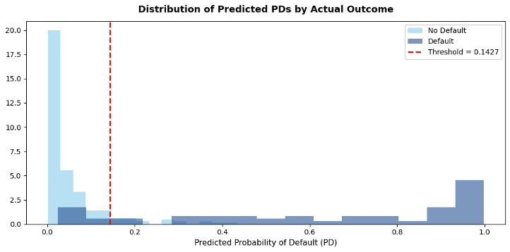
La distribución de PDs predichas replica la estructura observada en validación. La PD promedio simple es de 16.85% mientras que la ponderada por EAD desciende a 14.53%, reafirmando que los créditos de mayor saldo se concentran en segmentos de menor riesgo. La forma de la distribución mantiene la misma asimetría positiva; masa concentrada en PDs bajas con una cola derecha de acreditados en alto estrés financiero, lo que sugiere que la composición de riesgo del portafolio es homogénea entre los conjuntos de validación y prueba, descartando sesgos de muestreo en la partición original.
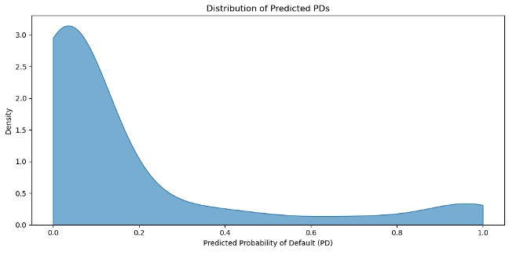
La segmentación por bucket en el conjunto de prueba replica con notable fidelidad la estructura observada en validación. El bucket Very High concentra el 81.8% del EL total ($193,291 de $236,423) con una PD promedio de 57.28%, la cual es prácticamente idéntica al 57.35% registrado en validación, a pesar de representar solo el 20.5% del EAD del portafolio. Los tres buckets restantes acumulan conjuntamente apenas $43,132 de pérdida esperada, con ratios EL/EAD inferiores al 0.62% en todos los casos.
| Bucket | N Créditos | EAD | Avg PD | Expected Loss | EL (%) |
|---|---|---|---|---|---|
| LOW | 69 | $5,079,702.00 | 0.85% | $1,662.77 | 0.03% |
| MEDIUM | 68 | $5,431,858.86 | 2.35% | $10,892.33 | 0.20% |
| HIGH | 68 | $4,997,544.00 | 7.17% | $30,577.31 | 0.61% |
| VERY HIGH | 68 | $4,009,748.00 | 57.28% | $193,290.85 | 4.82% |
| TOTAL | 273 | $19,518,852.86 | — | $236,423.26 | 1.21% |
La consistencia de las PDs promedio por bucket entre ambos conjuntos, con diferencias inferiores a 1 punto porcentual en todos los segmentos, confirma que el modelo asigna probabilidades de default de forma estable independientemente de la muestra evaluada. Desde la perspectiva de gestión de riesgo, esta reproducibilidad valida el uso de la segmentación como herramienta operativa: las políticas de pricing diferenciado y constitución de reservas diseñadas sobre validación son directamente aplicables sin recalibración.
La aplicación del modelo sobre las solicitudes nuevas en el conjunto de prueba genera un portafolio aprobado de $4.17 millones, sobre el cual la pérdida real por defaults no detectados asciende a $45,053, equivalente al 1.08% del nuevo portafolio. Este resultado es favorable frente al 1.21% de EL estimado sobre la cartera existente (MORTDUE), confirmando que el modelo selecciona consistentemente un subconjunto de menor riesgo relativo al aprobar solicitudes. El costo de oportunidad asciende a $505,938 (12.14%), reflejo del threshold conservador que, en un portafolio de prueba más pequeño, penaliza proporcionalmente más los rechazos incorrectos que en validación.
En conjunto, los resultados del conjunto de prueba validan la robustez del modelo a lo largo de todo el pipeline: la pérdida real sobre nuevas solicitudes se mantiene por debajo de la pérdida esperada de la cartera existente, el recall sobre defaults es de 87.0%, y las estimaciones de EL por bucket son estables entre conjuntos. El trade-off entre pérdida crediticia y costo de oportunidad es el parámetro central que una institución financiera ajustaría operativamente mediante el threshold, pero la evidencia presentada confirma que el modelo desarrollado constituye una herramienta discriminante, estable y generalizable para la originación de crédito hipotecario.
Resumen Ejecutivo de Resultados
El dashboard Overview concentra las métricas finales del modelo, perfiles de riesgo y composición de la tasa.
Conclusiones Generales
El análisis de la tasa de interés hipotecaria confirma que su determinación no es un proceso arbitrario, sino el resultado de una descomposición estructurada de riesgos y costos que la institución financiera debe compensar a lo largo de la vida del crédito.
Esta convergencia valida la metodología de construcción bottom-up empleada y confirma que cada componente tiene un sustento empírico robusto, desde datos del INEGI y Banxico hasta estimaciones académicas de primas de liquidez en mercados emergentes. La comparación con otras instituciones refuerza la viabilidad de la tasa formada como referencia para un acreditado de perfil estándar, posicionándose por encima de las tasas mínimas preferenciales de BBVA y Scotiabank, pero por debajo de los rangos de Banco del Bajío e Inbursa, lo que refleja adecuadamente el riesgo de un portafolio hipotecario representativo en México.
El modelo de negocio analizado evidencia la naturaleza dual del crédito hipotecario como producto bancario: genera un flujo estable de ingresos por intereses durante plazos de hasta 20 años, pero expone a la institución a riesgos de largo plazo sobre montos significativos. La existencia del inmueble como garantía real constituye el diferenciador estructural que permite que este producto opere con tasas sustancialmente menores que los créditos quirografarios (11.45% frente a 38.10% en tarjeta de crédito) pero no elimina el riesgo: los costos de ejecución hipotecaria, el tiempo del proceso judicial y los posibles descuentos en la venta del inmueble hacen que la recuperación sea parcial, justificando la incorporación explícita de un LGD del 35% en la prima crediticia y en el modelo de riesgo desarrollado.
El modelo de riesgo desarrollado demuestra una capacidad discriminante y una utilidad de negocio superiores al benchmark de regresión logística en todas las dimensiones evaluadas. El modelo baseline alcanzó un AUC de 0.69 y clasificó incorrectamente a 188 acreditados que incurrirían en default como clientes solventes, el cual es el error más costoso en cualquier sistema de originación crediticia, ya que se traduce directamente en pérdidas de capital. Frente a esto, el modelo XGBoost con feature engineering hipotecario alcanzó un AUC de 0.961 en validación y 0.950 en el conjunto de prueba, reduciendo los falsos negativos a 23 en validación y apenas 7 en prueba. Esta reducción no es marginal: representa la diferencia entre un modelo que aprueba sistemáticamente créditos incobrables y uno que los detecta con 87-88% de efectividad, preservando el capital de la institución.
La estabilidad del modelo entre conjuntos es igualmente relevante. La caída de apenas 1.1 puntos en AUC entre validación y prueba, la consistencia del threshold óptimo entre 0.143 y 0.146, y la reproducibilidad de las PDs promedio por bucket, que cuentan con diferencias inferiores a 1 punto porcentual entre ambos conjuntos, confirman que el modelo generaliza patrones estructurales del riesgo hipotecario y no memoriza la muestra de entrenamiento. Esta propiedad es un requisito explícito en los marcos de validación de modelos internos bajo Basilea, donde la estabilidad fuera de muestra es tan importante como el poder discriminante en muestra.
Los resultados de negocio validan la utilidad práctica del modelo más allá de las métricas estadísticas. En ambos conjuntos evaluados, la pérdida real sobre el portafolio de nuevas solicitudes aprobadas (0.78% en validación y 1.08% en prueba) se mantuvo por debajo del 1.21-1.26% de pérdida esperada estimada sobre la cartera existente de referencia. Esto implica que el modelo no solo clasifica mejor que el baseline, sino que selecciona activamente un subconjunto de menor riesgo relativo al aprobar solicitudes, logrando tasas de pérdida realizadas inferiores a las del portafolio de referencia en ambas evaluaciones. Este resultado es especialmente significativo al contrastarlo con el índice de morosidad nacional del 2.7% reportado por Banco de México para créditos hipotecarios, esto se debe a que el modelo logra vencer carteras benchmark en dos diferentes conjuntos de datos, lo cual lo vuelve lo suficientemente generalizable para ser utilizado con datos propios del mercado mexicano y lograr pérdidas reales menor al promedio nacional.
Finalmente, aunque el dataset utilizado (HMEQ) corresponde al mercado hipotecario estadounidense, las variables que el modelo identifica como más relevantes mediante SHAP son universalmente consistentes con la teoría de riesgo crediticio hipotecario: la razón deuda-ingreso (DEBTINC), la antigüedad del historial crediticio (CLAGE), el ratio de líneas delinquentes (DELINQ_RATIO) y el apalancamiento combinado sobre el colateral (CLTV). Estos factores son igualmente determinantes en el mercado mexicano, donde la CNBV y Banxico utilizan métricas análogas para la evaluación de cartera hipotecaria. La capacidad del modelo para capturar señales económicamente coherentes con el entorno regulatorio mexicano, y para producir resultados consistentes con los parámetros de riesgo del sistema financiero nacional, sugiere que su estructura es suficientemente generalizable para operar como herramienta de apoyo en la etapa de originación de crédito hipotecario en México, con el beneficio adicional de sustituir el criterio subjetivo del analista por patrones identificados sistemáticamente en datos históricos.
Supuestos, Limitaciones y Mejoras
El modelo asume que los datos históricos disponibles son representativos de la población actual de solicitantes, es decir, que los patrones de incumplimiento observados en el pasado se mantendrán en el futuro.
El modelo fue diseñado exclusivamente para personas que ya cuentan con una hipoteca preexistente. Esto constituye un supuesto estructural del modelo: se asume que todo solicitante evaluado pertenece a este segmento específico de la población y el modelo entonces solo sirve para personas que ya tengan una hipoteca preexistente con esta banca en específico.
Se asume también que cada solicitante cuenta con información completa para todas las variables del dataset, es decir, que no existen valores faltantes en el momento de la evaluación. En la práctica, esto puede no cumplirse si algún solicitante no tiene historial hipotecario previo, no declara ciertos ingresos o simplemente no cuenta con alguno de los datos requeridos por el modelo.
El dataset cuenta con un volumen de observaciones reducido, lo que limita la capacidad del modelo para aprender patrones robustos, particularmente para la clase minoritaria de incumplimientos.
Se asume que XGBoost es una forma funcional adecuada para capturar la relación entre las características del solicitante y la probabilidad de incumplimiento.
Se asume que el umbral de clasificación seleccionado mediante la curva ROC sobre el conjunto de validación es generalizable a datos futuros, lo cual depende de que la distribución de las probabilidades predichas sea estable entre conjuntos.
Se asume que la muestra original es suficientemente representativa de la población, ya que el remuestreo con reemplazo únicamente redistribuye las observaciones existentes sin introducir información nueva. Si el dataset original contiene sesgos de selección, el conjunto aumentado heredará y potencialmente amplificará esos mismos sesgos.
La validación cruzada estratificada asume que los datos son intercambiables entre folds, es decir, que no existe una estructura temporal o de agrupamiento relevante en las observaciones. En un contexto crediticio esto puede ser cuestionable, ya que créditos otorgados en distintos períodos económicos no son necesariamente comparables. También se asume que el AUC promedio de los 5 folds es un estimador confiable del desempeño real del modelo sobre datos nuevos.
Sustituir o complementar el dataset actual con información hipotecaria proveniente del contexto mexicano, lo que permitiría que el modelo refleje de manera más fiel las condiciones del mercado local.
Contar con un volumen mayor de datos para poder abrir la posibilidad de utilizar modelos más complejos, como redes neuronales, que tienen mayor capacidad para capturar relaciones no lineales entre variables. Esto conlleva, sin embargo, un sacrificio en términos de interpretabilidad, ya que estos modelos son considerablemente más difíciles de explicar.
Incorporación de simulaciones de la cartera de crédito mediante cópulas, una técnica estadística que permite modelar la dependencia entre las probabilidades de incumplimiento de distintos acreditados de forma conjunta. Para que esto sea viable se requeriría no solo más datos, sino datos de mejor calidad que permitan estimar con precisión las estructuras de dependencia entre clientes.
Los costos administrativos, las tasas de recuperación y los márgenes de ganancia que intervienen en el cálculo de la tasa y la pérdida esperada son simplificaciones que en un entorno real deberían calibrarse con información interna de la institución financiera.
Reflexión del Equipo
Este proyecto estuvo bastante interesante y al mismo tiempo bastante pesado, ya que implicaba mucha investigación de fondo sobre la formación de las tasas de interés en México y los riesgos que implican, para así poder crear nuestra propia tasa de interés para créditos hipotecarios. Tuvimos que buscar mucha información para poder justificar cada componente de la tasa y que todo tuviera sentido económico, y no solo poner números arbitrarios. Además, un reto importante fue intentar encontrar una base de datos de créditos hipotecarios de México para machine learning, la cuál no fue posible encontrar, por lo que se tuvo que utilizar una de Estados Unidos. Por último, como en el proyecto anterior, quisimos que la presentación fuera algo diferente, así que decidimos hacer otra pagina web pero ahora con un extra, ya que pusimos pestañas mucho más interactivas utilizando nuestros resultados, como el simulador de amortización que utiliza la tasa que nosotros formamos.
Este proyecto me pareció muy interesante pero a la vez complejo. La dificultad comenzó desde la investigación teórica detrás de los componentes de la tasa de interés, ya que encontrar información clara sobre este tema resultó más difícil de lo esperado. A lo largo del desarrollo también surgieron problemas prácticos que fue necesario resolver sobre la marcha, como los pocos datos disponibles con los que contabamos, situación que resolvimos con el método de bootstrap. En términos generales, considero que este proyecto fue una oportunidad valiosa para aplicar en un caso más práctico los conceptos de clase, pero también para desarrollar la capacidad de identificar y resolver problemas que no estaban previstos desde el inicio.
Fue un proyecto bastante pesado, sobre todo por la parte de investigación de los componentes de la tasa para el crédito hipotecario, ya que requirió de investigación en muchas fuentes y realizar análisis de como funciona los componentes para poder determinarlos. Fue interesante un enfoque más económico que no suele darse frecuentemente en la carrera, tanto para la creación de la tasa como para el análisis y la interpretación de los resultados obtenidos en el código. Por último fue interesante aplicar varios conceptos investigados en la realización del código para el cálculo de distintas medidas de riesgo.
Referencias (APA)
CONDUSEF. (s.f.). Cómo seleccionar un crédito hipotecario. https://www.condusef.gob.mx/?p=contenido&idc=848&idcat=1
Estructura de información (SIE, Banco de México). (2026). https://www.banxico.org.mx/SieInternet/consultarDirectorioInternetAction.do?sector=18&accion=consultarCuadro&idCuadro=CF303&locale=es
BBVA México. (s. f.). Crédito hipotecario y cuál es su tasa de interés. https://www.bbva.mx/educacion-financiera/creditos/credito-hipotecario/credito-hipotecario-y-cual-es-su-tasa-de-interes.html
Banco Santander México. (2023, enero). ¿Qué es un crédito hipotecario? https://www.santander.com.mx/educacion-financiera/blog/que-es-un-credito-hipotecario/index.html
Navi. (n.d.). What is a base rate? Navi. https://navi.com/blog/base-rate/
Consulta de cuadro resumen (SIE, Banco de México). (2026). https://www.banxico.org.mx/SieInternet/consultarDirectorioInternetAction.do?sector=18&accion=consultarCuadroAnalitico&idCuadro=CA51&locale=es
Arenas, R. (2022, 6 de septiembre). ¿Qué es la tasa de interés? Yotepresto. https://www.yotepresto.com/blog/tasa-de-interes
Banco de México. (2026). Inflación. https://www.banxico.org.mx/tipcamb/main.do?page=inf&idioma=sp
Corporate Finance Institute. (2020, 30 de enero). Liquidity premium. https://corporatefinanceinstitute.com/resources/equities/liquidity-premium/
Cesce. (2023, 24 de junio). ¿Qué es el riesgo financiero y cuáles son sus tipos? https://www.cesce.es/es/w/asesores-de-pymes/riesgo-financiero-que-es-tipos
Consulta de cuadro resumen (SIE, Banco de México). (2026). https://www.banxico.org.mx/SieInternet/consultarDirectorioInternetAction.do?sector=24&accion=consultarCuadroAnalitico&idCuadro=CA224&locale=es
Flores, L. (2026, 12 de febrero). IMEF eleva pronóstico de inflación para 2026 y 2027; puede llegar a 4.5%, advierte. El Universal. https://www.eluniversal.com.mx/cartera/imef-eleva-pronostico-de-inflacion-para-2026-y-2027-puede-llegar-a-45-advierte/
Tuovila, A. (2026, 16 marzo). Loss given Default (LGD): two ways to calculate, plus an example. Investopedia. https://www.investopedia.com/terms/l/lossgivendefault.asp#toc-lgd-vs-ead
Series de datos. (s. f.). https://www.proyectosmexico.gob.mx/por-que-invertir-en-mexico/economia-solida/politica-monetaria/sd_tasas-de-inflacion-historicas/
Heath, J. (2025, noviembre 21). Perspectivas de Inflación y Política Monetaria [Presentación]. LIII Convención anual IMEF, Los Cabos, Baja California, México. https://www.banxico.org.mx/publicaciones-y-prensa/presentaciones/%7BF4A0F392-2622-306C-EB85-7071806E5E70%7D.pdf
Banco de México. (2024). Indicadores básicos de créditos a la vivienda: Datos a marzo de 2024. https://www.banxico.org.mx/publicaciones-y-prensa/rib-creditos-a-la-vivienda/%7BAB077DBE-6D11-F99B-FF96-215E545D82F8%7D.pdf
Comisión Nacional Bancaria y de Valores. (2015). Estudios Económicos CNBV (Vol. 3).
Voss, J. (2012, abril 3). Components of credit spreads and their importance. CFA Institute. https://rpc.cfainstitute.org/blogs/enterprising-investor/2012/components-of-credit-spreads-and-their-importance
Longstaff, F. A., Mithal, S., & Neis, E. (2014). Corporate yield spreads: Default risk or liquidity? New evidence from the credit default swap market (Working Paper No. 20638). National Bureau of Economic Research. https://www.nber.org/system/files/working_papers/w20638/w20638.pdf
Banco de México. (s.f.). Sistema financiero y CAT. https://www.banxico.org.mx/
Comisión Nacional Bancaria y de Valores. (2022). Información estadística de banca múltiple. https://www.gob.mx/cnbv
Flores, L. (2013). Banca mexicana tiene un alto costo operativo. El Economista. https://www.eleconomista.com.mx
BankSift. (s. f.). Net interest margin (NIM). https://banksift.org/metrics/net-interest-margin
Bruno, B., & otros autores. (2019). Determinants of banks’ net interest margin: Evidence from the euro area during the crisis and post-crisis period. Sustainability, 11(14), 3785. https://www.mdpi.com/2071-1050/11/14/3785
Investopedia. (s. f.). Profit margin. https://www.investopedia.com/terms/p/profitmargin.asp
Estructura de información (SIE, Banco de México). (s. f.). https://www.banxico.org.mx/SieInternet/consultarDirectorioInternetAction.do?sector=18&accion=consultarCuadro&idCuadro=CF815&locale=es
Banco de México. (2024). Indicadores básicos de tarjetas de crédito. Datos a junio de 2024 (Uso Público). https://www.banxico.org.mx/publicaciones-y-prensa/rib-tarjetas-de-credito/%7B14E29CFF-57A9-FA73-4BE1-BD50EB70064B%7D.pdf
Kaur, T. (2025, February 19). KNN Imputation: The Complete Guide. Medium. https://medium.com/@tarangds/knn-imputation-the-complete-guide-146f932870a7
Investopedia. (2025, December 23). Loan-to-value (LTV) ratio. https://www.investopedia.com/terms/l/loantovalue.asp
Investopedia. (2025, Junio 3). Home equity. https://www.investopedia.com/terms/h/home_equity.asp
Investopedia. (2025, Mayo 30). Negative equity. https://www.investopedia.com/terms/n/negativeequity.asp
Investopedia. (2025, Octubre 1). Credit risk. https://www.investopedia.com/terms/c/creditrisk.asp
Comisión Nacional Bancaria y de Valores. (2017, enero 6). Resolución que modifica las Disposiciones de carácter general aplicables a las instituciones de crédito [Artículo 99 Bis 2 y Anexo 16]. Diario Oficial de la Federación. https://www.dof.gob.mx/nota_detalle.php?codigo=5468723&fecha=06/01/2017
Comisión Nacional de Procedimientos Civiles y Familiares. (2024). Código Nacional de Procedimientos Civiles y Familiares [Artículos 506–519 y 1065–1110]. Justia México. https://mexico.justia.com/federales/codigos/codigo-nacional-de-procedimientos-civiles-y-familiares/
Coldwell Banker México. (2024). Foreclosure auctions: An accessible way to buy a house. https://blog.coldwellbanker.com.mx/en/foreclosure-auctions-an-accessible-way-to-buy-a-house/
Rosen Law. (2024). Foreclosing on cross-border loans in Mexico. https://rosenlaw.com.mx/foreclosing-on-cross-border-loans-in-mexico/
Urban Capital. (2024). The definitive guide to US and Mexican foreclosures. https://newsletter.foreclosuremexico.com/guide-to-us-and-mexican-foreclosures/
Basel Committee on Banking Supervision. (2006). Basel II: International convergence of capital measurement and capital standards — A revised framework, comprehensive version (BCBS Publication No. 128). Bank for International Settlements. https://www.bis.org/publ/bcbs128.pdf
Crédito Hipotecario en México 2026:Tu Guía Definitiva de Tasas de Interés. (2026, 9 abril). https://bancario.com.mx/tasa-de-interes-credito-hipotecario
Bancario. (2026, Abril). Tasa de interés de crédito hipotecario en México. https://bancario.com.mx/tasa-de-interes-credito-hipotecario/
Choromanska, A., Henaff, M., Mathieu, M., Ben Arous, G., & LeCun, Y. (2015). The loss surfaces of multilayer networks. arXiv. https://arxiv.org/abs/1412.0233
Dirick, L., Claeskens, G., & Baesens, B. (2016). Time to default in credit scoring using survival analysis: A benchmark study. Journal of the Operational Research Society, *67*(3), 652-665. https://doi.org/10.1057/s41274-016-0128-9
James, G., Witten, D., Hastie, T., & Tibshirani, R. (2021). An Introduction to Statistical Learning (2nd ed.). Springer. https://www.statlearning.com/
Kohavi, R. (1995). A study of cross-validation and bootstrap for accuracy estimation and model selection. Proceedings of IJCAI, 14(2), 1137–1145. https://dl.acm.org/doi/10.5555/1643031.1643047
Hastie, T., Tibshirani, R., & Friedman, J. (2009). The Elements of Statistical Learning (2nd ed.). Springer. https://web.stanford.edu/~hastie/ElemStatLearn/
Credit_Model.py
Este archivo contiene el código funcional para el modelo de crédito.
Data_Cleaning.ipynb
Este archivo contiene el código para la limpieza de datos, incluyendo corrección de formatos, transformación de variables e imputación para los datos faltantes.
data_holdout.csv
Este archivo contiene el conjunto de datos de prueba.
↓ Descargarhmeq.csv
Este archivo contiene la base de datos original.
↓ Descargarhmeq_cleaned.csv
Este archivo contiene la base de datos limpia utilizada para entrenar el modelo de crédito.
↓ DescargarDiagrama de lógica
Este archivo contiene el diagrama de lógica del código funcional.
↓ Descargar| Bucket | N Créditos | EAD | Avg PD | Expected Loss | EL (%) |
|---|---|---|---|---|---|
| LOW | 259 | $20,612,223.00 | 0.84% | $13,220.67 | 0.06% |
| MEDIUM | 258 | $20,346,721.00 | 2.16% | $43,356.60 | 0.21% |
| HIGH | 258 | $19,418,488.00 | 6.26% | $117,269.02 | 0.60% |
| VERY HIGH | 259 | $16,215,712.82 | 57.35% | $790,920.21 | 4.88% |
| Parámetro / Métrica | Valor | Fuente |
|---|---|---|
| PARÁMETROS | ||
| PD — Morosidad hipotecaria nacional | 2.70% | Banxico 2024 |
| LGD promedio — Pérdida dado incumplimiento | 35% | CNBV 2015 |
| Haircut sobre colateral | 30% | CUB Art. 99 Bis 2 |
| Threshold óptimo (ROC) | 0.143 | Validation set |
| Tasa amortización (LOAN) | 11.5040% | Modelo propio |
| Plazo simulación | 20 años | Mercado MX |
| MÉTRICAS DE NEGOCIO — VALIDATION SET | ||
| EAD Total (MORTDUE) | $76,593,144.82 | Validation set |
| Expected Loss | $964,766.50 | Validation set |
| EL / EAD | 1.26% | Validation set |
| PD promedio ponderada EAD | 14.73% | Validation set |